<!doctype html>
<html lang="en">
<head>
  <meta charset="utf-8">
  <meta name="viewport" content="width=device-width, initial-scale=1">
  <title>arxiv digest — 2026-10-15</title>
  <style>
:root {
  --bg: #ffffff;
  --fg: #1f2328;
  --muted: #59636e;
  --border: #d0d7de;
  --card: #f6f8fa;
  --link: #0969da;
}
body {
  max-width: 980px;
  margin: 0 auto;
  padding: 2rem 1rem 5rem;
  font-family: -apple-system, BlinkMacSystemFont, "Segoe UI", Helvetica, Arial, sans-serif;
  line-height: 1.55;
  color: var(--fg);
  background: var(--bg);
}
a { color: var(--link); }
img { max-width: 100%; height: auto; }
pre, code { background: var(--card); border-radius: 6px; }
pre { padding: 1rem; overflow-x: auto; }
blockquote { border-left: 4px solid var(--border); padding-left: 1rem; color: var(--muted); }
details { margin: 0.6rem 0; }
summary { cursor: pointer; font-weight: 600; }
.paper-figures-scroll {
  display: flex;
  gap: 1rem;
  overflow-x: auto;
  overscroll-behavior-x: contain;
  padding: 0.75rem 0.25rem 1rem;
  margin: 1rem 0 1.25rem;
  border-top: 1px solid var(--border);
  border-bottom: 1px solid var(--border);
  scroll-snap-type: x proximity;
}
.paper-figure-card {
  flex: 0 0 min(260px, 72vw);
  scroll-snap-align: start;
  background: var(--card);
  border: 1px solid var(--border);
  border-radius: 12px;
  padding: 0.55rem;
}
.paper-figure-card img {
  display: block;
  width: 100%;
  max-height: 240px;
  object-fit: contain;
  background: white;
  border-radius: 8px;
}
.paper-figure-caption {
  display: block;
  margin-top: 0.5rem;
  color: var(--muted);
  font-size: 0.85rem;
}
.figure-strip-hint {
  color: var(--muted);
  font-size: 0.9rem;
  margin-bottom: -0.3rem;
}
</style>
  <script>
    window.MathJax = {
      tex: {
        inlineMath: [['$', '$'], ['\\(', '\\)']],
        displayMath: [['$$', '$$'], ['\\[', '\\]']],
        processEscapes: true,
        processEnvironments: true
      },
      options: {
        skipHtmlTags: ['script', 'noscript', 'style', 'textarea', 'pre', 'code'],
        ignoreHtmlClass: 'tex2jax_ignore',
        processHtmlClass: 'tex2jax_process'
      }
    };
  </script>
  <script id="MathJax-script" async
    src="https://cdn.jsdelivr.net/npm/mathjax@3/es5/tex-chtml.js"></script>
</head>
<body>
<header style="background-color: #333; color: white; padding: 15px; margin-bottom: 20px;">
  <h1 style="margin: 0; font-size: 24px;">
    <a href="https://ochelpan.github.io/arXiv_clean/" style="color: white; text-decoration: none;">Main</a>
  </h1>
</header>

<h1>Daily arXiv Report</h1>

<hr>
<p>
<a href="index.html">← Index</a>
 · <a href="papers_02.html">Next →</a>
</p>
<hr>

<h2>Papers 1–20</h2>
<p><a id="paper-2610.17328"></a></p>
<h3 id="krylov-complexity-and-quantum-many-body-scars-in-non-hermitian-kinetically-constrained-models"><a href="http://arxiv.org/abs/2610.17328v1">Krylov Complexity and Quantum Many-body Scars in Non-Hermitian Kinetically Constrained Models</a></h3>
<p><strong>Authors:</strong> Arkaprava Sil, Rudraksh Kaushik, Souvik Kundu, Prasant Mallik, Sudipto Singha Roy<br>
<strong>Type:</strong> theory · <strong>Category:</strong> other · <strong>PDF:</strong> <a href="https://arxiv.org/pdf/2610.17328v1">https://arxiv.org/pdf/2610.17328v1</a><br>
<strong>Analysis basis:</strong> full PDF text, analyzed in chunks
<strong>Topic relevance:</strong> 🔥 <code>Rydberg arrays</code> <strong>4/5</strong> · 🔥 <code>scars &amp; prethermalization</code> <strong>4/5</strong> · <code>analog quantum simulation</code> <strong>3/5</strong> · <code>driven-dissipative phase transition</code> <strong>3/5</strong> · <code>correlated / nonlocal dissipation</code> <strong>2/5</strong> · <code>methods for driven-dissipative</code> <strong>2/5</strong> · <code>non-equilibrium universality</code> <strong>2/5</strong></p>
<div class="figure-strip-hint">↔ Scroll figures horizontally</div>
<div class="paper-figures-scroll">
<figure class="paper-figure-card">

<figcaption class="paper-figure-caption"><b>Fig 1.</b> Figure 1. Krylov complexity for the left and right ensembles in the non-Hermitian PXP model with increasing γ. In (a)–(h), we show the behavior obtained for the left ensemble (C(L) K ) for γ = 0.0, 0.3, 0.5, 0.7, 0.8, 0.9, 0.95, 0.99, respectively, with |Z2⟩taken as the initial state. The corresponding results for the right ensemble (C(R) K ) are shown in (i)–(p). All plots are for L = 14. For the left ensemble, increasing γ leads to a progressive suppression of the oscillations and a tendency towards saturation of C(L) K , whereas for the right ensemble the oscillations in C(R) K become increasingly prominent. This distinct behavior highlights the different Krylov-complexity dynamics of...</figcaption>
</figure>
<figure class="paper-figure-card">

<figcaption class="paper-figure-caption"><b>Fig 2.</b> Figure 2. Behavior of Arnoldi coefficients with Krylov steps. (a) Arnoldi coefficients bn as a function of the Krylov index n for the right eigenvector ensemble, shown for various non-Hermitian parameter values γ. The γ = 0 curve corresponds to the Hermitian PXP model and exhibits the characteristic arch-shaped profile associated with quantum many-body scar states. As γ increases, this arch-shaped structure is progressively modified, revealing a behavior distinctly different from the Hermitian limit. (b) bn versus n for the left eigenvector ensemble at the same values of γ. Unlike the right ensemble, a Hermitian-like arch-shaped imprint re-emerges even at large γ, but with a notable γ-...</figcaption>
</figure>
<figure class="paper-figure-card">

<figcaption class="paper-figure-caption"><b>Fig 3.</b> Figure 3. Krylov complexity and probability dynamics in Hermitian and non-Hermitian PXP systems. (a) We replot the Krylov complexity CK(t) as a function of time for the Hermitian PXP model, to compare with the corresponding Krylov-space probabilities |ϕn(t)|2. Here, we consider L = 8, for which the Krylov-space dimension is 12. (b) Shows the Krylov-space probabilities |ϕn(t)|2 for the Hermitian case for all 12 Krylov states, highlighting the probability transfer between the Krylov states and the dominant oscillations of |ϕ0(t)|2 and |ϕ8(t)|2. (c) Depicts the Krylov complexity C(R) K (t) for the non-Hermitian right ensemble, showing the modified oscillatory behavior of the complexity, and...</figcaption>
</figure>
<figure class="paper-figure-card">
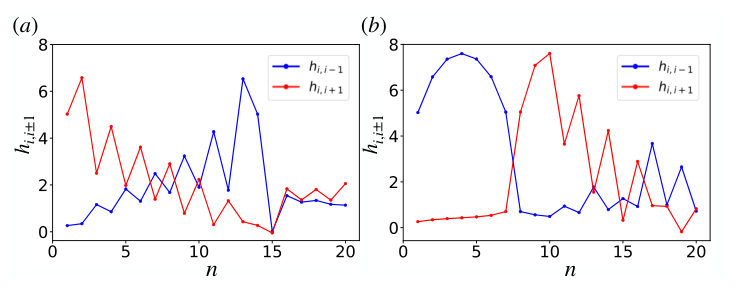
<figcaption class="paper-figure-caption"><b>Fig 4.</b> Figure 4. Coefficients of the Hessenberg matrix in the right and left ensembles. (a) Here, we plot the coefficients of the Hesseneberg matrix, hi,i−1(bn) and hi,i+1, as a function of the Krylov index n for the right ensemble, while (b) shows the corresponding behavior for the left ensemble. In both cases, we observe that the behavior of hi,i−1 is almost the opposite of hi,i+1.</figcaption>
</figure>
<figure class="paper-figure-card">

<figcaption class="paper-figure-caption"><b>Fig 5.</b> Figure 5. Entanglement structure and scar-state overlaps in the Hermitian and non-Hermitian PXP models. (a) Shows the behavior of entanglement entropy (EE) with energy E, for the Hermitian PXP model (γ = 0). (b) and (c) show the corresponding EE versus E plots for the right and left ensembles, respectively, of the non-Hermitian PXP model at γ = 0.7. (d) Overlap of the PXP eigenstates with the |Z2⟩state. (e) and (f) show the corresponding overlaps for the right and left ensembles, respectively, of the non-Hermitian PXP model. All plots are for L = 18 and include the two momentum sectors k = 0 and π. The scar states are highlighted by circles, with red and blue circles denoting the k = 0 and...</figcaption>
</figure>
</div>

<p><strong>Summary.</strong> This paper analyzes non-Hermitian generalizations of kinetically constrained models, such as those describing Rydberg arrays. Using Krylov complexity, the authors demonstrate that non-Hermiticity causes the left and right eigenstate ensembles to exhibit fundamentally different dynamical behaviors. This highlights the necessity of treating left and right eigenvectors separately when characterizing non-Hermitian quantum systems.</p>
<p><strong>Why it may be interesting.</strong> This work directly addresses the complex interplay between non-Hermiticity, quantum dynamics, and ergodicity breaking in lattice models relevant to Rydberg arrays, which is a key area in AMO physics and condensed matter theory.</p>
<details>
<summary>Detailed structure</summary>
<p><strong>Main problem.</strong> The study investigates the breakdown of thermalization and ergodicity in non-Hermitian quantum many-body systems, specifically focusing on the dynamical differences between left and right eigenstate ensembles.</p>
<p><strong>Main result.</strong> Non-Hermiticity causes distinct dynamical behaviors in the left and right Krylov ensembles, such as different trends in Krylov complexity and the emergence of atypical low-entanglement eigenstates in the left ensemble.</p>
<p><strong>Method.</strong> The authors employ Krylov complexity analysis, utilizing Arnoldi's algorithm to construct independent left and right Krylov bases for non-Hermitian Hamiltonians.</p>
<p><strong>Model / system.</strong> The research focuses on non-Hermitian generalizations of paradigmatic kinetically constrained models, such as the PXP and PPXPP models, which are effective descriptions for a 1D Rydberg atom array under blockade.</p>
<p><strong>Key observables.</strong> Krylov complexity, eigenstate structure, entanglement entropy, and the behavior of Arnoldi coefficients.</p>
<p><strong>Important parameters / regimes.</strong> The degree of non-Hermiticity ($\gamma$) and the system size ($L$).</p>
<p><strong>Assumptions / limitations.</strong> The analysis requires treating the left and right eigenstate ensembles separately due to the inherent asymmetry introduced by non-Hermiticity.</p>
<p><strong>Figures summary.</strong> Figures illustrate the distinct Krylov complexity evolution (oscillations vs. saturation) for left and right ensembles, and compare entanglement entropy between the two ensembles.</p>
<p><strong>Paper structure.</strong> The paper proceeds by defining the non-Hermitian models, applying the Arnoldi algorithm to generate left/right bases, and then comparing the resulting Krylov dynamics and eigenstate properties.</p>
</details>
<details>
<summary>Abstract</summary>
<p>Thermalization in closed quantum systems and its breakdown are central to understanding the emergence of statistical behavior in isolated many-body systems. Kinetic constraints can hinder thermalization by restricting the allowed dynamics and giving rise to non-ergodic behavior. While various aspects of ergodicity breaking in kinetically constrained models have been extensively studied in Hermitian systems, their behavior in non-Hermitian kinetically constrained models remains less explored. In particular, the inequivalence of left and right eigenstate ensembles in non-Hermitian systems raises the question of whether they exhibit qualitatively different dynamical and eigenstate properties. In this work, we study non-Hermitian generalizations of the paradigmatic PXP and PPXPP models, focusing on their Krylov complexity, eigenstate structure, and dynamics. By exploiting the Arnoldi's algorithm, we find distinct behavior of Krylov complexity in the left and right eigenstate ensembles as non-Hermiticity is increased: in the right ensemble, it exhibits persistent oscillations with an increasing period, while in the left ensemble, it gradually saturates. The characteristic arch-shaped profile of the Arnoldi coefficients is also modified differently in the two ensembles, with a Hermitian-like arch re-emerging in the left ensemble at large non Hermiticity. Additionally, in the non-Hermitian PXP model, the right ensemble retains the characteristic scar structure, while the left ensemble develops additional non-scar eigenstates with anomalously low entanglement and large overlap with the vacuum state. These findings reveal that non-Hermiticity can affect Krylov dynamics and eigenstate structure differently in the left and right ensembles, demonstrating the need to treat them separately when characterizing non-Hermitian kinetically constrained systems.</p>
</details>
<p><sub><a href="#top">↑ back to top</a></sub></p>

<p><a id="paper-2610.18124"></a></p>
<h3 id="local-error-correction-prolongs-time-crystalline-memory"><a href="http://arxiv.org/abs/2610.18124v1">Local error correction prolongs time-crystalline memory</a></h3>
<p><strong>Authors:</strong> Benedikt Fauseweh<br>
<strong>Type:</strong> both · <strong>Category:</strong> quantum information and computing · <strong>PDF:</strong> <a href="https://arxiv.org/pdf/2610.18124v1">https://arxiv.org/pdf/2610.18124v1</a><br>
<strong>Analysis basis:</strong> full PDF text, analyzed in chunks
<strong>Topic relevance:</strong> 🔥 <code>driven-dissipative phase transition</code> <strong>4/5</strong> · <code>QC/QI experiment</code> <strong>3/5</strong> · <code>analog quantum simulation</code> <strong>3/5</strong> · <code>methods for driven-dissipative</code> <strong>3/5</strong> · <code>non-equilibrium universality</code> <strong>2/5</strong> · <code>quantum measurements</code> <strong>2/5</strong> · <code>correlated / nonlocal dissipation</code> <strong>1/5</strong> · <code>scars &amp; prethermalization</code> <strong>1/5</strong></p>
<div class="figure-strip-hint">↔ Scroll figures horizontally</div>
<div class="paper-figures-scroll">
<figure class="paper-figure-card">
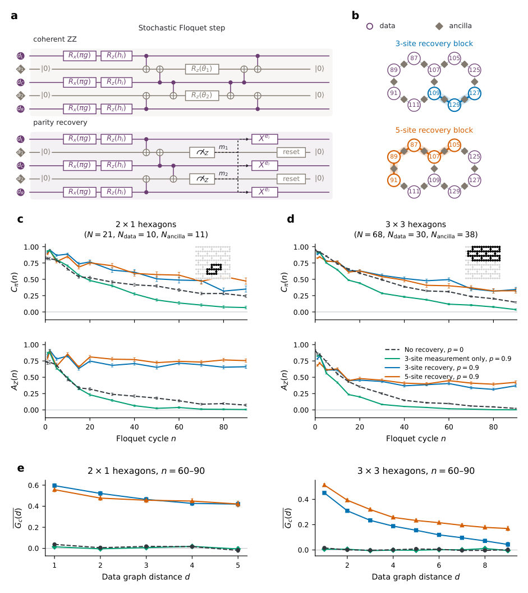
<figcaption class="paper-figure-caption"><b>Fig 1.</b> Figure 1. Local bit-flip error correction extends temporal and spatial order. a, The stochastic drive step has two alternatives for a candidate recovery block. With probability 1−𝑝, entangling gates and local rotation gates implement coherent ZZ interactions. With probability 𝑝, parity measurements and conditional data flips implement recovery, followed by ancilla reset. b, Physical embeddings of example three-site and five-site recovery blocks on two adjacent hexagons. Circles are data qubits and diamonds are ancillas. c,d, Initial state memory and mean alignment 𝐴𝑍for the two patches. Insets mark the selected hardware qubits in black. e, Connected correlations versus distance on the data...</figcaption>
</figure>
<figure class="paper-figure-card">

<figcaption class="paper-figure-caption"><b>Fig 2.</b> Figure 2. Small pulse angle memory decay. a, Initial-state memory on two hexagons with ten data qubits and eleven ancillas at 𝑔= 0.67. Quenched interactions and fields use the same disorder intervals as Fig. 1. Bare evolution is compared with full three-site recovery at 𝑝= 0.9. Every circuit starts from |0000000000⟩, with 128 shots per condition at each depth from 1 to 60. b, Connected correlation averaged equally over cycles 40 to 60 after averaging pairs at each graph distance. Recovery maintains short-distance correlations while subharmonic memory is lost. Bars indicate one sampling standard error.</figcaption>
</figure>
<figure class="paper-figure-card">
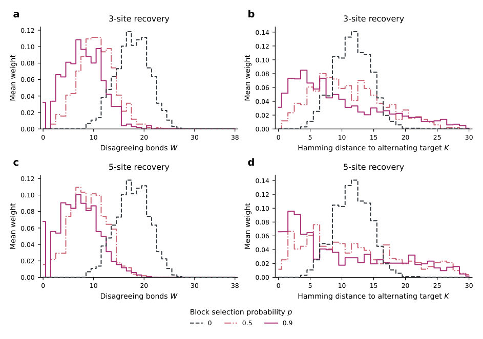
<figcaption class="paper-figure-caption"><b>Fig 3.</b> Figure 3. Probability distributions for Hamming distance and bonds. Mitigated distributions on the 3 × 3 patch, normalized at each depth and averaged equally over the sampled cycles 60, 70, 80, 90. The acquired conditions are the shared bare reference 𝑝= 0 and recovery at 𝑝= 0.5 and 𝑝= 0.9. The 𝑝= 0 and 𝑝= 0.9 curves use 256 shots, while the 𝑝= 0.5 curve uses 128 shots. a,b, Three-site recovery. c,d, Five-site recovery. a,c, Number 𝑊of disagreeing data bonds. b,d, Hamming distance 𝐾from the target word. The two globally aligned orientations both have 𝑊= 0 but occupy opposite ends of the 𝐾axis.</figcaption>
</figure>
<figure class="paper-figure-card">

<figcaption class="paper-figure-caption"><b>Fig 4.</b> Figure 4. Spatial order dependence on block activation probability. a,b, Domain wall fraction 𝐷(𝑛) on the 3 × 3 patch for three-site and five-site recovery at 𝑝= 0.5 and 𝑝= 0.9, with the shared bare reference 𝑝= 0. The shaded region marks cycles 60 to 90. c, Equal-depth averages over the sampled cycles 60, 70, 80, 90. Five-site recovery gives a lower wall fraction at both acquired nonzero probabilities. The 𝑝= 0.5 curves use 128 shots per circuit, all other curves use 256 shots. The black point is the bare reference.</figcaption>
</figure>
<figure class="paper-figure-card">
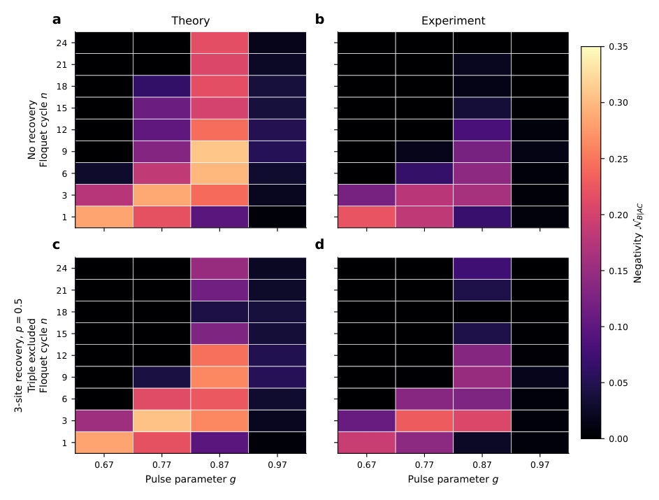
<figcaption class="paper-figure-caption"><b>Fig 5.</b> Figure 5. Local entanglement during bare and recovered dynamics. Negativity across 91 | (89, 111) for a fixed data-qubit triple on the two-hexagon patch. a,b, Bare dynamics. c,d, Three-site recovery at 𝑝= 0.5. a,c, Exact ten-data-qubit theory with ideal gates and recovery. b,d, Density-matrix estimates from 27 Pauli settings with 768 shots each. All conditions start from |0⟩⊗10 and share the same quenched disorder. Recovery uses the same qubit activations in theory and experiment. Colors show fitted negativity.</figcaption>
</figure>
</div>

<p><strong>Summary.</strong> This research demonstrates that applying local bit-flip error correction protocols can significantly extend the memory lifetime of time-crystalline order in a noisy quantum simulation. By implementing these error correction circuits on a superconducting processor, the authors show that the system's ability to maintain spatiotemporal order is robustly protected, confirming the utility of QEC for stabilizing exotic quantum phases.</p>
<p><strong>Why it may be interesting.</strong> This work directly bridges the physics of non-equilibrium quantum matter (time crystals) with the practical challenges of quantum computation, demonstrating how QEC techniques can stabilize exotic quantum phases against noise.</p>
<details>
<summary>Detailed structure</summary>
<p><strong>Main problem.</strong> The primary goal is to extend the operational lifetime of time-crystalline memory in a noisy quantum processor by implementing local error correction protocols.</p>
<p><strong>Main result.</strong> Local bit-flip error correction significantly prolongs the memory decay time of the time-crystalline response, increasing it by a factor of up to two compared to bare dynamics.</p>
<p><strong>Method.</strong> The study uses superconducting quantum processors to simulate a driven Ising model, applying stochastic local bit-flip error correction (repetition codes of distances three and five) to mitigate environmental decoherence.</p>
<p><strong>Model / system.</strong> The system is a driven, spatially disordered two-dimensional Ising model simulated on a superconducting quantum processor using a honeycomb lattice. The dynamics are governed by a Floquet drive, and the error correction involves ancilla qubits and syndrome measurements.</p>
<p><strong>Key observables.</strong> Temporal memory decay ($   au$), spatial alignment ($A_Z$), connected correlations ($G_c(d)$), domain-wall fraction ($D$), and quantum negativity ($\mathcal{N}$).</p>
<p><strong>Important parameters / regimes.</strong> The error correction distances (3-site and 5-site), the probability ($p$) of activating the stochastic drive/correction, and the lattice size (up to 68 physical qubits).</p>
<p><strong>Assumptions / limitations.</strong> The analysis relies on the effectiveness of local bit-flip error correction and assumes that the measured physical time is an accurate conversion from the cycle-domain decay scale.</p>
<p><strong>Figures summary.</strong> Figures compare connected correlations and domain-wall fractions for bare vs. recovered dynamics, showing recovery maintains order; Figure 2 shows temporal memory loss curves; Figure 3 compares error distributions ($W$ and $K$); Figure 5 compares entanglement (Negativity) across protocols.</p>
<p><strong>Paper structure.</strong> The paper establishes the time-crystal model and the challenge of decoherence. It then introduces the error correction methodology, comparing the decay of temporal and spatial order under bare dynamics versus various local recovery protocols. Finally, it quantifies the improvement in memory lifetime and spatial stabilization achieved by the conditional correction.</p>
</details>
<details>
<summary>Abstract</summary>
<p>Discrete time crystals are non-equilibrium phases of matter with spatiotemporal order and a response that breaks the time-translation symmetry of a periodic external drive. Interactions, spatial disorder and correlated random driving can in theory stabilize this order. In experiments, however, coupling to the environment limits the time crystal lifetime. Here we use stochastic local bit-flip error correction to prolong the time-crystalline response of a driven, spatially disordered two-dimensional Ising model on a superconducting quantum processor, using a repetition code with distances three and five on a honeycomb lattice with up to 68 physical qubits. Even though ancilla qubits, midcircuit syndrome measurements and decoding increase the required quantum and classical resources, the stochastic drive increases the memory decay time by a factor of up to two. At late times we observe that recovery stabilizes spatial order across the lattice. The spin-configuration distributions explain this separation, as recovery suppresses disagreeing bonds while broadening occupies completely reversed states. Syndrome measurements without correction accelerate the memory decay, demonstrating the importance of conditional correction. Our results show that local bit-flip error correction can preserve time-crystalline memory over more drive cycles than the bare dynamics.</p>
</details>
<p><sub><a href="#top">↑ back to top</a></sub></p>

<p><a id="paper-2610.17885"></a></p>
<h3 id="deep-mesoscopic-dynamics"><a href="http://arxiv.org/abs/2610.17885v1">Deep Mesoscopic Dynamics</a></h3>
<p><strong>Authors:</strong> Yue Zhao, Shiqi Wu, Yihang Ouyang, Sergey Grebenchuk, Magdalena Grzeszczyk, Xiaoxu Zhao, Kostya S. Novoselov, Maciej Koperski, Qianxiao Li<br>
<strong>Type:</strong> theory · <strong>Category:</strong> statistical mechanics · <strong>PDF:</strong> <a href="https://arxiv.org/pdf/2610.17885v1">https://arxiv.org/pdf/2610.17885v1</a><br>
<strong>Analysis basis:</strong> full PDF text, analyzed in chunks
<strong>Topic relevance:</strong> 🔥 <code>methods for driven-dissipative</code> <strong>4/5</strong> · <code>driven-dissipative phase transition</code> <strong>3/5</strong> · <code>Keldysh / 2PI / non-Gaussian methods</code> <strong>2/5</strong> · <code>non-equilibrium universality</code> <strong>2/5</strong> · <code>quantum measurements</code> <strong>2/5</strong> · <code>Frenkel-Kontorova</code> <strong>1/5</strong> · <code>analog quantum simulation</code> <strong>1/5</strong> · <code>correlated / nonlocal dissipation</code> <strong>1/5</strong> · <code>scars &amp; prethermalization</code> <strong>1/5</strong></p>
<div class="figure-strip-hint">↔ Scroll figures horizontally</div>
<div class="paper-figures-scroll">
<figure class="paper-figure-card">
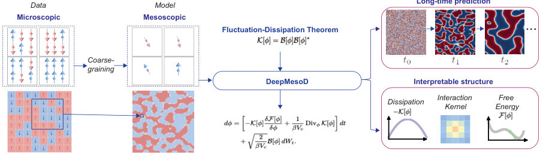
<figcaption class="paper-figure-caption"><b>Fig 1.</b> Figure 1: Workflow of DeepMesoD. Microscopic trajectories are coarse-grained into observations of a mesoscopic field at a prescribed spatial scale. DeepMesoD uses these trajectories to estimate the physical structures in a mesoscopic field equation within a prescribed dynamical class.</figcaption>
</figure>
<figure class="paper-figure-card">

<figcaption class="paper-figure-caption"><b>Fig 2.</b> Figure 2: Validation of DeepMesoD in the Ising–Kac system with hydrodynamic limit. The DeepMesoD rollouts are noise-free with the Itˆo thermal drift retained. A,B. Field mean ab- solute error at each evaluation time for T = 0.75 and T = 1.5. Green shading marks the training interval, and yellow shading marks the subsequent rollout-only interval. C,D. Mean magnetisa- tion during the same rollouts. E,F. Homogeneous free-energy density g(m), compared with the hydrodynamic-limit reference. Each curve is shifted independently so that its minimum is zero. G. Conditional dissipation-operator response E{[K[ϕ]1](x) | ϕ(x) = m}, compared with the reference in (4) computed from the corresponding...</figcaption>
</figure>
<figure class="paper-figure-card">

<figcaption class="paper-figure-caption"><b>Fig 3.</b> Figure 3: Long-term stability and thermodynamic-structure recovery in atomistic spin dynamics. A. Long-term rollout from a triangular-domain initial condition on the same lat- tice. The DeepMesoD prediction is noise-free with the Itˆo thermal drift retained. Training uses random-initial-state trajectories. The triangular-domain initial condition is used for geometric- initial-condition extrapolation, not for fitting these stages. The dashed boundary at 1 ns separates the interval with an atomistic reference (“Observed”) from the interval without a reference (“Ex- trapolation”), ending at 25 ns. Time labels are in ps. The atomistic reference permits accuracy comparisons over 0–1 ns, but...</figcaption>
</figure>
<figure class="paper-figure-card">

<figcaption class="paper-figure-caption"><b>Fig 4.</b> Figure 4. A learned stacking-fault interaction connects internal geometry to multistep magnetic response in CrBr3. A. Structural and magnetic schematic of layered CrBr3. Left: crystal structure of CrBr3 (Cr atoms in purple, Br atoms in gold). Middle: top and side views of representative M-stacking and AB-stacking configurations, where M denotes monoclinic stacking and AB denotes rhombohedral stacking and the two adjacent layers are coloured purple and green. Right: schematic AFM (antiparallel) and FM (parallel) interlayer spin alignments across a stacking fault, shown alongside the simulated three-dimensional magnetisation field mz at the final time step. The light-blue plane marks the...</figcaption>
</figure>
</div>

<p><strong>Summary.</strong> This paper introduces DeepMesoD, a neural network method that learns effective mesoscopic field equations directly from microscopic simulations. It bridges the gap between detailed, slow microscopic models and overly simplified bulk descriptions by preserving crucial spatial patterns. The method is shown to accurately model diverse magnetic systems, offering dramatic speedups while capturing complex physics like domain wall interactions.</p>
<p><strong>Why it may be interesting.</strong> It provides a powerful, data-driven tool for simulating complex, non-equilibrium dynamics in condensed matter systems where traditional analytical or purely microscopic methods fail due to computational cost or complexity.</p>
<details>
<summary>Detailed structure</summary>
<p><strong>Main problem.</strong> To develop efficient methods to simulate mesoscopic dynamics that accurately resolve spatial patterns, bridging the gap between computationally limited microscopic simulations and pattern-erasing bulk descriptions.</p>
<p><strong>Main result.</strong> The DeepMesoD framework successfully learns effective mesoscopic field equations for complex magnetic systems, achieving massive computational speedups while accurately reproducing known physical limits and capturing subtle material effects like interlayer coupling changes.</p>
<p><strong>Method.</strong> A novel neural network approach (DeepMesoD) is used to learn the effective mesoscopic field equation directly from microscopic trajectories, constrained by fundamental physical principles like the fluctuation-dissipation relation.</p>
<p><strong>Model / system.</strong> The study applies to general dissipative dynamics, focusing on magnetic systems like the Ising-Kac model, 2D Heisenberg ferromagnets, and layered CrBr3 films. The dynamics are modeled via stochastic field equations incorporating learned free-energy functionals and dissipation operators.</p>
<p><strong>Key observables.</strong> Mesoscopic field evolution, free-energy functional, dissipation operator, spectral power, and correlation rates.</p>
<p><strong>Important parameters / regimes.</strong> Coarse-graining scale, temperature (T=0.75, T=1.5), and fault geometry/placement in layered materials.</p>
<p><strong>Assumptions / limitations.</strong> The dynamics are assumed to belong to a general class of dissipative dynamics satisfying the fluctuation-dissipation relation; the learned model assumes locality for certain interaction factors.</p>
<p><strong>Figures summary.</strong> Figures illustrate the workflow from microscopic to mesoscopic learning, show the recovery of known hydrodynamic limits, and demonstrate the ability to model complex fault structures in layered magnets.</p>
<p><strong>Paper structure.</strong> The paper introduces DeepMesoD, validates it on the Ising-Kac model, extends it to the Heisenberg ferromagnet, and applies it to layered CrBr3, detailing the mathematical constraints and the computational efficiency gains.</p>
</details>
<details>
<summary>Abstract</summary>
<p>Microscopic simulations resolve spatial patterns but are feasible only over small domains and short timescales, whereas bulk descriptions erase those patterns through spatial averaging. Mesoscopic fields preserve this spatial organisation, but their effective equations are known only for selected microscopic systems and scaling limits. We introduce Deep Mesoscopic Dynamics (DeepMesoD), which uses neural networks to learn an effective mesoscopic field equation from microscopic trajectories at a prescribed coarse-graining scale. For the nonconserved dissipative dynamics studied here, DeepMesoD learns the free-energy functional with a spatial interaction kernel and a state-dependent dissipation operator constrained by the fluctuation-dissipation relation. We first validate the construction in the Ising-Kac model, where the learned mesoscopic equation recovers the known hydrodynamic limit and rollouts remain stable far beyond the training horizon. We then treat two systems without closed-form mesoscopic descriptions. For a two-dimensional Heisenberg ferromagnet governed by atomistic spin dynamics, DeepMesoD learns a mesoscopic model whose predictions match atomistic references up to 1 ns, and a rollout with an unseen initial condition remains bounded up to 25 ns. For layered CrBr$_3$, the learned kernel captures the suppression and sign reversal of interlayer coupling at a stacking fault whose location and strength are not supplied as inputs. Controlled changes to the learned interaction show how fault number and placement shape multistep magnetic responses, complementing our magneto-photoluminescence measurements. Across the two atomistic systems, DeepMesoD achieves a three-to-four-order-of-magnitude reduction in wall-clock time compared with atomistic spin dynamics.</p>
</details>
<p><sub><a href="#top">↑ back to top</a></sub></p>

<p><a id="paper-2610.17855"></a></p>
<h3 id="emergent-non-biorthogonal-born-rule-at-dynamical-quantum-phase-transitions"><a href="http://arxiv.org/abs/2610.17855v1">Emergent Non-Biorthogonal Born Rule at Dynamical Quantum Phase Transitions</a></h3>
<p><strong>Authors:</strong> Wei-Wei Yang, Henning Schomerus, Jiangping Hu, Zhesen Yang<br>
<strong>Type:</strong> theory · <strong>Category:</strong> statistical mechanics · <strong>PDF:</strong> <a href="https://arxiv.org/pdf/2610.17855v1">https://arxiv.org/pdf/2610.17855v1</a><br>
<strong>Analysis basis:</strong> full PDF text, analyzed in chunks
<strong>Topic relevance:</strong> 🔥 <code>driven-dissipative phase transition</code> <strong>4/5</strong> · <code>correlated / nonlocal dissipation</code> <strong>3/5</strong> · <code>non-equilibrium universality</code> <strong>3/5</strong> · <code>Keldysh / 2PI / non-Gaussian methods</code> <strong>2/5</strong> · <code>methods for driven-dissipative</code> <strong>2/5</strong> · <code>quantum measurements</code> <strong>2/5</strong> · <code>analog quantum simulation</code> <strong>1/5</strong></p>
<div class="figure-strip-hint">↔ Scroll figures horizontally</div>
<div class="paper-figures-scroll">
<figure class="paper-figure-card">

<figcaption class="paper-figure-caption"><b>Fig 1.</b> FIG. 1. Phase diagram and the orthogonal DQPT. (a) Number NDQPT of zeros of det USS(t) within the observation window λt ≤60, versus Jc/λ and g/λ. The gray and blue curves mark the DQPT boundary and the EP-DQPT locus; points A–D at Jc/λ = 0.2 mark the no-DQPT (g/λ = 1.2), boundary (0.9953), generic (0.9), and EP-DQPT (0.7047) parameter sets. (b) Critical-time Loschmidt-echo landscape λψ = −ln Lψ(tc) on the Bloch sphere (Mollweide projection) at the boundary point B. The unique zero-echo state sits at the north pole, and the projected trajectories of distinct initial states ϕ(1,2,3) 0 all funnel into the output |R1⟩at the south pole. (c) Transition probability W1 = |⟨R1|Uc|ψ⟩|2 versus x =...</figcaption>
</figure>
<figure class="paper-figure-card">

<figcaption class="paper-figure-caption"><b>Fig 2.</b> FIG. 2. Critical-time Loschmidt-echo landscapes on the Bloch sphere [(a),(b)] and transition probability W1 versus x [(c),(d)], for the generic non-biorthogonal DQPT point [(a),(c)] and the EP-DQPT point [(b),(d)].</figcaption>
</figure>
<figure class="paper-figure-card">

<figcaption class="paper-figure-caption"><b>Fig 3.</b> FIG. 3. Critical-state geometry and critical-time structure. (a) Overlap |⟨L1|R1⟩| across the phase diagram; curves and points A–D as in Fig. 1(a). From the DQPT boundary to the EP-DQPT locus it falls from unity to zero, obeying |⟨R1|R2⟩|2+ |⟨L1|R1⟩|2 = 1. (b) Loschmidt echoes at the EP point D: those of |R2⟩and |L2⟩coincide and vanish at tc, whereas their equal superposition has L(tc) = |κ|2/4. (c) Fisher zeros of det USS in the complex-λt plane as g/λ varies at Jc/λ = 0.2; colors encode g/λ, dashed curves trace the zero trajectories, and circles mark points A–D.</figcaption>
</figure>
<figure class="paper-figure-card">
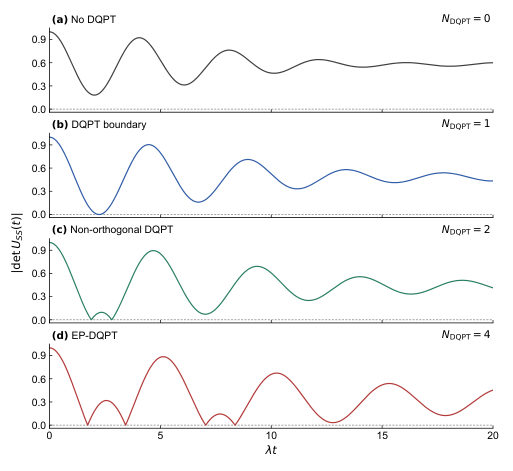
<figcaption class="paper-figure-caption"><b>Fig 4.</b> FIG. 4. Absolute determinant dynamics, |D(t)| = | det USS(t)|, at the four representative points marked in Fig. 1(a). Panels (a)–(d) correspond to no DQPT, the DQPT boundary, a generic non-biorthogonal DQPT, and an EP- DQPT, respectively. The dashed line denotes |D(t)| = 0. Counting distinct zeros over the phase-diagram observation window, with the quadratic tangency in (b) counted once, gives NDQPT = (0, 1, 2, 4).</figcaption>
</figure>
</div>

<p><strong>Summary.</strong> This paper develops a generalized theory for Dynamical Quantum Phase Transitions (DQPTs) in non-Hermitian systems by deriving a non-biorthogonal Born rule. It shows that the transition rate can be robustly calculated using the overlap of left and right eigenstates, even when the standard normalization fails. The framework successfully classifies different types of DQPTs, including those occurring at exceptional points.</p>
<p><strong>Why it may be interesting.</strong> This work provides a deep theoretical framework connecting non-Hermitian physics, open quantum systems, and phase transitions, which is highly relevant for understanding dissipation and measurement processes in AMO physics.</p>
<details>
<summary>Detailed structure</summary>
<p><strong>Main problem.</strong> The paper aims to provide a rigorous probabilistic interpretation for non-Hermitian quantum mechanics, particularly in the context of Dynamical Quantum Phase Transitions (DQPTs). It addresses the ambiguity arising from the standard biorthogonal normalization.</p>
<p><strong>Main result.</strong> A new 'non-biorthogonal Born rule' is proposed, which uses the mutual overlap of left and right states to define a physically accessible transition rate. The theory classifies DQPTs, including exceptional-point variants (EP-DQPTs), based on the vanishing of the subsystem evolution operator's determinant.</p>
<p><strong>Method.</strong> The analysis involves generalizing DQPT diagnostics from a reference state to a physical subspace, utilizing the resolvent method, and analyzing the Loschmidt echo and the determinant of the projected propagator, $\det U_{SS}(t)$.</p>
<p><strong>Model / system.</strong> The study models dynamics using a globally Hermitian Hamiltonian $H = H_S + H_E + H_{S-E}$, where a small subsystem $S$ is coupled to a large environment $E$ (modeled as a tight-binding chain).</p>
<p><strong>Key observables.</strong> Loschmidt Echo ($L_\psi(t)$), Transition Probability ($W_1$), $\det U_{SS}(t)$, and the overlap $|\langle L_1|R_1
angle|$.</p>
<p><strong>Important parameters / regimes.</strong> The coupling strengths and parameters defining the phase diagram (e.g., $g/\lambda, J_c/\lambda$) are crucial for identifying different DQPT regimes (Orthogonal, Non-biorthogonal, EP-DQPT).</p>
<p><strong>Assumptions / limitations.</strong> The theory relies on generalizing DQPTs to a physical subspace $S$ and contrasts the results with the assumption of bounded time-local generators for the subsystem dynamics.</p>
<p><strong>Figures summary.</strong> Figures illustrate the phase diagram mapping different DQPT regimes (A-D) and show critical-time Loschmidt-echo landscapes and transition probability dependence on input state overlap.</p>
<p><strong>Paper structure.</strong> The paper progresses by first establishing the limitations of the standard Born rule, then generalizing DQPT diagnostics to a physical subspace, deriving the non-biorthogonal Born rule, and finally classifying the resulting transitions, including the EP-DQPTs.</p>
</details>
<details>
<summary>Abstract</summary>
<p>Non-Hermitian dynamics possesses distinct left and right eigenstates, but their normalization freedom obscures a direct probabilistic interpretation.   Starting from a globally Hermitian system governed by the standard Born rule, we generalize dynamical quantum phase transitions (DQPTs) from a reference state to a physical subspace.   This generalization provides a clear probabilistic interpretation of left and right states: when each state is normalized to itself, their mutual overlap determines a directly accessible dynamical transition rate.   We discuss the new phenomena governed by this emergent non-biorthogonal Born rule and further identify a class of exceptional-point DQPTs (EP-DQPTs), at which the eigenstates of the critical propagator coalesce.   Our theory places the probabilistic interpretation of non-Hermitian quantum mechanics on the firm footing of Hermitian quantum mechanics.</p>
</details>
<p><sub><a href="#top">↑ back to top</a></sub></p>

<p><a id="paper-2610.18778"></a></p>
<h3 id="deterministic-and-programmable-generation-of-mechanical-multipartite-entangled-states"><a href="http://arxiv.org/abs/2610.18778v1">Deterministic and programmable generation of mechanical multipartite entangled states</a></h3>
<p><strong>Authors:</strong> Isabelle Franzen, Max-Emanuel Kern, Q. Rumman Rahman, Igor Kladarić, Stefano Marti, Yiwen Chu, Zhi-Yuan Wei, Matteo Fadel<br>
<strong>Type:</strong> both · <strong>Category:</strong> quantum information and computing · <strong>PDF:</strong> <a href="https://arxiv.org/pdf/2610.18778v1">https://arxiv.org/pdf/2610.18778v1</a><br>
<strong>Analysis basis:</strong> full PDF text, analyzed in chunks
<strong>Topic relevance:</strong> 🔥 <code>QC/QI experiment</code> <strong>4/5</strong> · <code>analog quantum simulation</code> <strong>3/5</strong> · <code>correlated / nonlocal dissipation</code> <strong>2/5</strong> · <code>driven-dissipative phase transition</code> <strong>2/5</strong> · <code>methods for driven-dissipative</code> <strong>2/5</strong> · <code>Tavis-Cummings &amp; cavity-many-emitter</code> <strong>1/5</strong> · <code>quantum measurements</code> <strong>1/5</strong> · <code>quantum optics experiment</code> <strong>1/5</strong></p>
<div class="figure-strip-hint">↔ Scroll figures horizontally</div>
<div class="paper-figures-scroll">
<figure class="paper-figure-card">
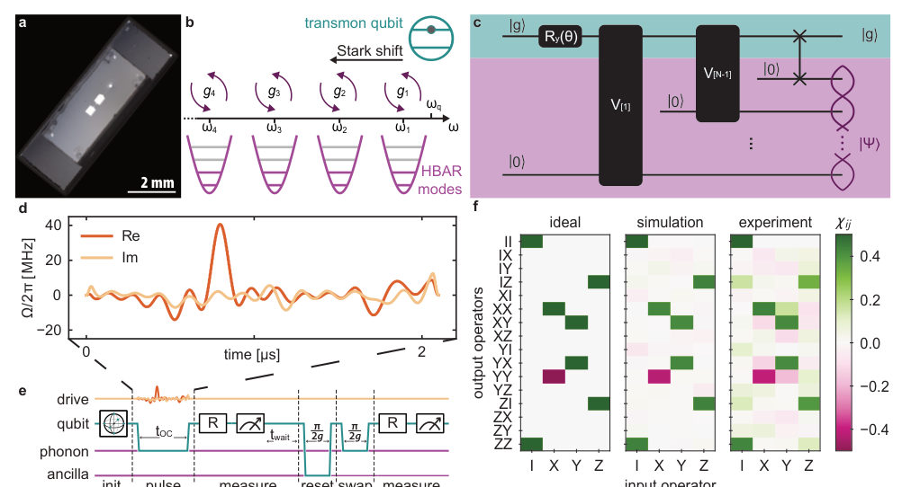
<figcaption class="paper-figure-caption"><b>Fig 1.</b> FIG. 1. HBAR device and process tomography of the MPS preparation pulses. a) Micrograph of the transmon- HBAR device and b) its schematic illustration. The transmon can be frequency-shifted to become resonant with the individual phonon modes of the HBAR, to which it couples at rate gk. In this work, we only operate within the {|0⟩, |1⟩} subspace of each phonon mode. c) Algorithm to prepare MPS in an HBAR using isometries ˆV and the qubit as an ancilla. d) Pulse shape used for implementing the GHZ isometry Eq. (2). e) Gate sequence used to retrieve process maps. f) Process maps of the ideal, simulated, and experimental isometry Eq. (2) used for GHZ state preparation. See main text for...</figcaption>
</figure>
<figure class="paper-figure-card">

<figcaption class="paper-figure-caption"><b>Fig 2.</b> FIG. 2. Fidelities of the prepared W, GHZ and cluster states, and density matrices. a) Experimental and simulated fidelities for W states prepared on different numbers of modes. b,c) Real part of representative density matrices for W2 and W3 states reconstructed from full state tomography. d,e,f) and g,h,i) show the same for GHZ and cluster states, respectively. Simulations include decoherence during the state-preparation sequence but not the sequential tomographic readout. For W states the decrease of the measured fidelities thus originates mainly from the readout, while for GHZ and cluster states the decrease reflects decoherence during the optimal-control pulses (see main text).</figcaption>
</figure>
<figure class="paper-figure-card">
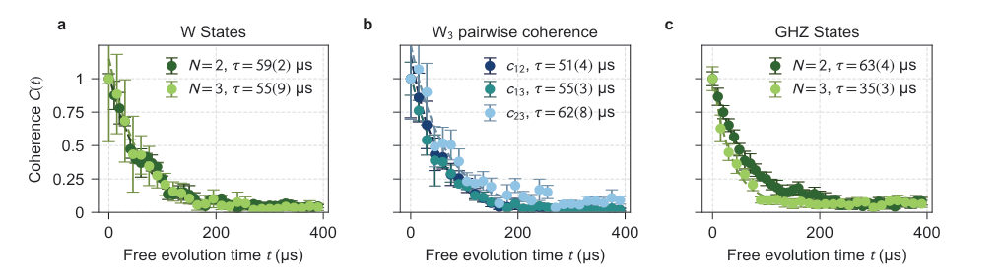
<figcaption class="paper-figure-caption"><b>Fig 3.</b> FIG. 3. Free evolution of W and GHZ coherences. a) Coherence C(t), normalized to its value at t = 0, of W states with N = 2, 3 modes as a function of the free evolution time t. Lines show fits to Ae−t/τ + B, with the extracted decay times τ given in the legend. b) Pairwise coherences ckl(t) of the W3 state, fitted in the same way. c) Same as panel a, but for GHZ states. Unlike for W states, the GHZ decay rate depends on N. This dependence is here quantitatively explained by local decoherence alone, without any contribution from correlated dephasing (see main text for details).</figcaption>
</figure>
</div>

<p><strong>Summary.</strong> This work demonstrates a scalable method to deterministically create complex multipartite entangled states (like W and GHZ states) in mechanical resonators coupled to superconducting qubits. By combining optimal control techniques with quantum state tomography, the authors not only prepare these states but also develop a robust sensing protocol that isolates collective noise effects from local decoherence.</p>
<p><strong>Why it may be interesting.</strong> The combination of a solid-state mechanical system (HBAR) with superconducting qubits to generate and test complex entangled states is highly relevant for scalable quantum hardware development and quantum sensing.</p>
<details>
<summary>Detailed structure</summary>
<p><strong>Main problem.</strong> The paper addresses the deterministic and programmable generation of multipartite entangled states among mechanical modes, which is crucial for quantum simulation and sensing.</p>
<p><strong>Main result.</strong> They successfully demonstrated the preparation of W, GHZ, and cluster states in a mechanical system and developed a method to quantify inter-mode phase correlations by isolating them from local decoherence.</p>
<p><strong>Method.</strong> The protocol uses optimal-control-engineered isometries implemented via a superconducting transmon qubit coupled to a high-overtone bulk acoustic wave resonator (HBAR). State characterization involves quantum state tomography and entanglement witnesses.</p>
<p><strong>Model / system.</strong> The physical platform is a circuit quantum acoustics (cQAD) setup involving a transmon qubit coupled to multiple phonon modes in an HBAR. The dynamics are analyzed using Hamiltonian descriptions and master equations to model decoherence.</p>
<p><strong>Key observables.</strong> Fidelity ($F$), Genuine Multipartite Entanglement (GME) witnesses ($    ext{Tr}[\hat{W}
ho]$), and the ratio $R_N(t)$ used to estimate collective dephasing rates.</p>
<p><strong>Important parameters / regimes.</strong> Bond dimension two (for MPS), coupling strengths ($g_k$), and decoherence rates ($\gamma^{(k)}_1, \gamma^{(k)}_\phi$).</p>
<p><strong>Assumptions / limitations.</strong> The analysis often focuses on the two lowest Fock states ($\{|0
angle_k, |1
angle_k\}$) of each mode, and the decoherence analysis relies on specific master equation forms.</p>
<p><strong>Figures summary.</strong> Figures illustrate the HBAR device, the algorithm for MPS preparation using isometries, and show experimental/simulated fidelities for W, GHZ, and cluster states for various particle numbers.</p>
<p><strong>Paper structure.</strong> The paper moves from demonstrating the physical protocol for state preparation (using isometries and tomography) to analyzing the theoretical robustness of these states against decoherence (comparing W vs. GHZ decay rates).</p>
</details>
<details>
<summary>Abstract</summary>
<p>Multimode mechanical resonators offer a large set of densely packed, long-lived bosonic modes within a single compact device, making them attractive for quantum simulation, quantum information processing, and quantum-enhanced sensing. Many such applications rely on multipartite entanglement, yet deterministic mechanical entanglement has so far been largely limited to pairs of modes. Here we demonstrate the deterministic and programmable preparation of multipartite entangled states among the phonon modes of a high-overtone bulk acoustic wave resonator coupled to a superconducting transmon qubit. By sequentially applying optimal-control-engineered isometries between the qubit and successive modes, we generate matrix product states of bond dimension two, including $W$, Greenberger-Horne-Zeilinger (GHZ), and cluster states. We fully characterize these states via quantum state tomography and certify genuine multipartite entanglement among up to four modes. We further demonstrate correlated-noise sensing by exploiting the complementary decoherence responses of the stored $W$ and GHZ states, isolating inter-mode phase correlations from local decoherence and placing quantitative bounds on collective dephasing. Our results establish a scalable approach to preparing multipartite entangled states in mechanical systems, with promising applications in multiparameter sensing and tests of quantum mechanics with massive objects.</p>
</details>
<p><sub><a href="#top">↑ back to top</a></sub></p>

<p><a id="paper-2610.17583"></a></p>
<h3 id="coherent-optical-control-of-a-thousand-qubits-in-a-three-dimensional-trapped-ion-crystal"><a href="http://arxiv.org/abs/2610.17583v1">Coherent optical control of a thousand qubits in a three-dimensional trapped-ion crystal</a></h3>
<p><strong>Authors:</strong> Yue Li, Yuxiang Huang, Yi Li, Xu Cheng, Zihan Xie, Qingyuan Mei, Chang-Ling Zou, Ya Wang, Xinhua Peng, Yiheng Lin, Jiangfeng Du<br>
<strong>Type:</strong> experiment · <strong>Category:</strong> other · <strong>PDF:</strong> <a href="https://arxiv.org/pdf/2610.17583v1">https://arxiv.org/pdf/2610.17583v1</a><br>
<strong>Analysis basis:</strong> full PDF text, analyzed in chunks
<strong>Topic relevance:</strong> 🔥 <code>QC/QI experiment</code> <strong>4/5</strong> · <code>analog quantum simulation</code> <strong>3/5</strong> · <code>quantum measurements</code> <strong>2/5</strong> · <code>quantum optics experiment</code> <strong>2/5</strong> · <code>correlated / nonlocal dissipation</code> <strong>1/5</strong> · <code>methods for driven-dissipative</code> <strong>1/5</strong></p>
<div class="figure-strip-hint">↔ Scroll figures horizontally</div>
<div class="paper-figures-scroll">
<figure class="paper-figure-card">

<figcaption class="paper-figure-caption"><b>Fig 1.</b> FIG. 1. Experimental platform and collective vibrational spectrum of a large three-dimensional Coulomb crystal. a, Schematic of the cryogenic Paul trap and optical drives. We utilize multiple 397 nm lasers driving the S1/2 to P1/2 transition, forming parallel resonances for the EIT cooling. A coherent drive laser of 729 nm is applied for either sideband thermometry, coherent Rabi oscillation or Ramsey coherence interferometry, depending on the laser frequency detuning from resonance. b, Fluorescence imaging along the transverse direction gives the ion crystal configuration. Varied confinements along the three directions give linear, planar and cigar-shaped 3D ion crystal configurations,...</figcaption>
</figure>
<figure class="paper-figure-card">
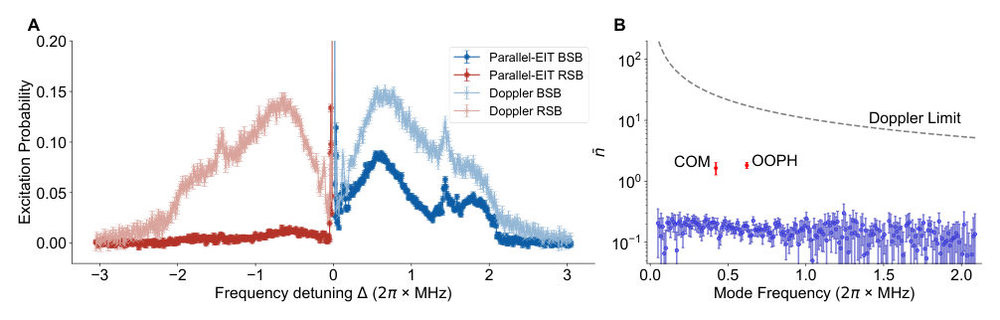
<figcaption class="paper-figure-caption"><b>Fig 2.</b> FIG. 2. Broadband near-ground-state cooling of a dense three-dimensional vibrational spectrum. a, Red-sideband and blue-sideband ex- citation spectra after Doppler cooling and parallel-EIT cooling. Parallel-EIT produces enhanced sideband asymmetry over the entire measured frequency range, demonstrating broadband suppression of motional excitation. b, Mean phonon number estimated from sideband asymmetry after parallel-EIT cooling ¯n = pr/(pb −pr). Swept-frequency (2π×10 kHz steps) measurements from 2π×50 kHz to 2π×2.1 MHz reveal near-ground-state cooling (¯n &lt; 0.3) across most of the vibrational spectrum. The axial center-of-mass and out-of-phase modes are indepen- dently characterized due...</figcaption>
</figure>
<figure class="paper-figure-card">

<figcaption class="paper-figure-caption"><b>Fig 3.</b> FIG. 3. Coherent optical control of a three-dimensional ion crystal after cooling. a Global carrier Rabi oscillations measured by collecting fluorescence from the entire ion crystal with a photomultiplier tube (PMT), after conventional Doppler cooling or parallel-EIT cooling. The solid curve represents a simulation for the latter case, based on the above spatial distribution of the Rabi frequency, without incorporating motional-temperature effects or decoherence, and quantitatively reproduces the observed ensemble decay. b Rabi oscillation across the ion crystal. We observe high contrast Rabi oscillation within the ion crystal, from fluorescence images that correspond to the spin population...</figcaption>
</figure>
<figure class="paper-figure-card">

<figcaption class="paper-figure-caption"><b>Fig 4.</b> FIG. 4. Ensemble-enhanced precision in transition spectroscopy. Probability distributions of the extracted optical-transition frequency become progressively narrower with increasing ion number for a single ion (green) in a, a 34-ion crystal (blue) in b, and a 3D Coulomb crystal containing 1,265 ions (orange) in c, measured under identical optical driving conditions. All fitting results are shown in the inset figure. The frequency deviations are referenced to the mean value ⟨f⟩for each dataset, and the corresponding standard deviations are σ/2π = 389 Hz, 81 Hz, and 12 Hz, respectively, with histogram shown in d. The inset of d shows the measured frequency uncertainty σ as a function of ion...</figcaption>
</figure>
</div>

<p><strong>Summary.</strong> This paper reports on achieving coherent optical control in a massive, three-dimensional trapped-ion crystal. By employing broadband cooling techniques, the researchers managed the dense spectrum of collective motional modes, enabling the crystal to function as a high-fidelity quantum register. This work significantly advances the feasibility of large-scale quantum simulation and metrology using trapped ions.</p>
<p><strong>Why it may be interesting.</strong> This work directly addresses the scalability bottleneck in trapped-ion quantum computing by demonstrating control over a highly complex, many-body motional bath, which is a major frontier in AMO physics.</p>
<details>
<summary>Detailed structure</summary>
<p><strong>Main problem.</strong> The primary challenge is achieving coherent optical control in large, three-dimensional (3D) trapped-ion crystals because the optical transition couples to a quasi-continuum bath of collective motional modes.</p>
<p><strong>Main result.</strong> The authors successfully cooled thousands of motional modes near the ground state and demonstrated global coherent control, achieving an ensemble optical coherence time of 21.6 ms and reducing frequency uncertainty significantly towards the projection-noise limit.</p>
<p><strong>Method.</strong> The research combines advanced cooling techniques (continuous cooling band spanning five octaves using parallel-EIT cooling) with high-precision spectroscopy (RSB/BSB) and coherent manipulation (Rabi oscillations) on a large ion crystal.</p>
<p><strong>Model / system.</strong> The system is a 3D Coulomb crystal of over 1,200 trapped ions. The complexity arises from the dense, quasi-continuous spectrum of $\approx 3N$ collective motional modes, which must be managed for global quantum operations.</p>
<p><strong>Key observables.</strong> Ensemble optical coherence time (21.6 ms), frequency uncertainty ($\sigma/2\pi$ reduced from 389 Hz to 12 Hz), and mean phonon occupation ($ar{n} < 0.3$).</p>
<p><strong>Important parameters / regimes.</strong> Ion number ($N_{	ext{ion}} \approx 1,265$), cooling bandwidth (50 kHz to 2.1 MHz), and the scaling of spectroscopic uncertainty ($N^{-0.48}$).</p>
<p><strong>Assumptions / limitations.</strong> The analysis assumes the robustness of the spectral envelope and mode frequencies despite variations in the metastable equilibrium configuration of the crystal.</p>
<p><strong>Figures summary.</strong> Figures illustrate the 3D crystal configuration and mode density, the broadband near-ground-state cooling process via sideband spectroscopy, and the scaling of frequency uncertainty with increasing ion number.</p>
<p><strong>Paper structure.</strong> The paper details the experimental platform, the necessity of broadband cooling to manage the dense mode spectrum, the successful implementation of global coherent control, and the quantitative demonstration of enhanced precision scaling in the large ensemble.</p>
</details>
<details>
<summary>Abstract</summary>
<p>Leading quantum platforms are largely limited to one or two dimensions, whereas three-dimensional Coulomb crystals of trapped ions self-assemble into dense qubit arrays with no rearrangement overhead. Coherent optical control of such crystals has nonetheless been out of reach, because the optical transition couples to nearly all $3N$ collective modes, i.e., a thermally occupied quasi-continuum bath. Here we cool about 3,600 modes of a crystal of over 1,200 ions below single-phonon occupation, using a continuous cooling band that spans more than five octaves in vibrational spectrum, from about 50 kHz to 2.1 MHz. The crystal then serves as a register of optical qubits, allowing global initialization, coherent manipulation and collective detection. We demonstrate ensemble optical coherence of 21.6 milliseconds and reduce the optical-transition frequency uncertainty from 389 Hz for a single ion to 12 Hz for over a thousand ions, approaching the expected projection-noise scaling. Our approach could be extended to even larger crystals with phonon-mediated many-body couplings, opening a route towards entanglement-enhanced precision metrology and three-dimensional quantum simulation, particularly with spatial-shaped illumination for region-resolved collective control.</p>
</details>
<p><sub><a href="#top">↑ back to top</a></sub></p>

<p><a id="paper-2610.18267"></a></p>
<h3 id="a-complete-quantum-process-model-for-physically-realistic-photo-detection-in-the-joint-photon-number-and-spectral-degrees-of-freedom"><a href="http://arxiv.org/abs/2610.18267v1">A complete quantum process model for physically realistic photo-detection in the joint photon-number and spectral degrees of freedom</a></h3>
<p><strong>Authors:</strong> Sadia Rafi, Aeysha Khalique<br>
<strong>Type:</strong> theory · <strong>Category:</strong> other · <strong>PDF:</strong> <a href="https://arxiv.org/pdf/2610.18267v1">https://arxiv.org/pdf/2610.18267v1</a><br>
<strong>Analysis basis:</strong> full PDF text, analyzed in chunks
<strong>Topic relevance:</strong> 🔥 <code>quantum measurements</code> <strong>4/5</strong> · <code>Full counting statistics</code> <strong>3/5</strong> · <code>correlated / nonlocal dissipation</code> <strong>2/5</strong> · <code>interference shaping light</code> <strong>2/5</strong></p>
<div class="figure-strip-hint">↔ Scroll figures horizontally</div>
<div class="paper-figures-scroll">
<figure class="paper-figure-card">

<figcaption class="paper-figure-caption"><b>Fig 1.</b> Fig. 1 An inefficient detector is modelled as a perfect detector preceded by a beam splitter with transmittivity η(ω). The input ρA is incident at one port and vacuum at the other port, which is discarded.</figcaption>
</figure>
<figure class="paper-figure-card">
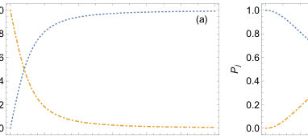
<figcaption class="paper-figure-caption"><b>Fig 2.</b> Fig. 2 Probability Pj of detection of j = 1 photon (dotted curve) and j = 0 photon (dot-dashed curve) by (a) varying detector spectral bandwidth sd for fixed photon spectral bandwidth sA = 1 (b) varying photon spectral bandwidth sA for fixed detector spectral bandwidth sd = 1. Here µ = 0</figcaption>
</figure>
<figure class="paper-figure-card">

<figcaption class="paper-figure-caption"><b>Fig 3.</b> Fig. 3 Probability Pj of detection of j = 0 photon (dotted curve), j = 1 photon (dot-dashed curve), j = 2 photons(dashed) and j = 3 (solid curve) in (a) by varying detector spectral bandwidth sd, for photon spectral bandwidth sA = 1, and in (b) by varying photon spectral bandwidth sA for sd = 1. µ = 0 for both.</figcaption>
</figure>
<figure class="paper-figure-card">

<figcaption class="paper-figure-caption"><b>Fig 4.</b> Fig. 4 Hong-Ou-Mandel effect</figcaption>
</figure>
<figure class="paper-figure-card">

<figcaption class="paper-figure-caption"><b>Fig 5.</b> Fig. 5 Probabilities Pjj′ of detection of j photons on one detector and j′ on the other vs the time delay T for P20 (orange), P02 (red), P11 (green), P01 (purple), P10 (brown) and P00 (blue) curve for (a) sd1 = 0.1, sd2 = 1.0, sA1 = sA2 = 0.1 and µ1 = µ2 = 0 and (b) sd1 = sd2 = 0.4, sA1 = 0.1, sA2 = 0.4, µ1 = 0.2 and µ2 = 0.</figcaption>
</figure>
</div>

<p><strong>Summary.</strong> This paper presents a comprehensive quantum process model for photodetection that rigorously incorporates both photon number and spectral degrees of freedom. By deriving modified Kraus operators, the model accurately simulates realistic detector inefficiencies and spectral filtering. This tool is essential for advancing quantum optical experiments and quantum information processing by providing a 'plug and play' framework for complex measurements.</p>
<p><strong>Why it may be interesting.</strong> This work provides a crucial, generalized theoretical tool for quantum optics, allowing researchers to move beyond idealized photon-number measurements to model real-world detector limitations.</p>
<details>
<summary>Detailed structure</summary>
<p><strong>Main problem.</strong> Theoretical models of photodetection often fail to account for spectral characteristics, limiting their applicability in modern quantum optics experiments.</p>
<p><strong>Main result.</strong> The authors developed a complete quantum process model using Kraus operators that successfully incorporates both photon-number statistics and frequency-dependent detector response.</p>
<p><strong>Method.</strong> The model is formulated using the operator-sum representation (Kraus operators) derived from a beam-splitter interaction, allowing it to function as a general Positive Operator Valued Measurement (POVM).</p>
<p><strong>Model / system.</strong> The system models photodetection by treating the interaction between the incident field and the detector through a beam-splitter, accounting for realistic detector inefficiencies and finite spectral windows.</p>
<p><strong>Key observables.</strong> Detection probabilities ($P_{j=1}, P_{j=0}, P_{jj'}$), which depend on the overlap between the detector's spectral response and the incident photon's spectral profile.</p>
<p><strong>Important parameters / regimes.</strong> Detector efficiency $\eta(\omega)$, incident spectral profile $\psi(\omega)$, and spectral bandwidths ($s_A, s_d$).</p>
<p><strong>Assumptions / limitations.</strong> The model assumes the detector can be described by a beam-splitter interaction and uses the operator-sum representation to handle realistic imperfections.</p>
<p><strong>Figures summary.</strong> Figures illustrate the physical setup (beam-splitter model) and plot detection probabilities ($P_j$) versus varying spectral bandwidths for single-photon and coherent state detection, including HOM interference results.</p>
<p><strong>Paper structure.</strong> The paper introduces the problem, derives the modified Kraus operators via the beam-splitter formalism, and then applies this comprehensive model to three canonical scenarios: single-photon detection, coherent state detection, and Hong-Ou-Mandel interference.</p>
</details>
<details>
<summary>Abstract</summary>
<p>Photo-detection is a fundamental component of experimental photonics, yet theoretical models often treat detectors solely in the photon-number basis, neglecting other relevant degrees of freedom such as spectral characteristics. We present a complete quantum process model for physically realistic photodetection that incorporates both photon-number effects and frequency-dependent detector response, described through explicitly derived Kraus operators in the operator-sum representation. This formalism accommodates realistic inefficiencies, models detection within finite spectral windows, and can be directly substituted for idealized models in quantum optical analyses. The model leads to identifying the suitable detection window of the detectors relative to the spectral distribution of incident photons and conversely, in order to maximize the observability of quantum effects.</p>
</details>
<p><sub><a href="#top">↑ back to top</a></sub></p>

<p><a id="paper-2610.18279"></a></p>
<h3 id="coherent-phonon-generation-from-prethermal-carrier-populations-in-a-semiconductor"><a href="http://arxiv.org/abs/2610.18279v1">Coherent Phonon Generation from Prethermal Carrier Populations in a Semiconductor</a></h3>
<p><strong>Authors:</strong> Mingyu Shi, Matteo Savoini, Patrick Friebel, Andrea Annunziata, Thomas Metzger, Yunpei Deng, Laura Cattaneo, Steven L. Johnson<br>
<strong>Type:</strong> both · <strong>Category:</strong> other · <strong>PDF:</strong> <a href="https://arxiv.org/pdf/2610.18279v1">https://arxiv.org/pdf/2610.18279v1</a><br>
<strong>Analysis basis:</strong> full PDF text, analyzed in chunks
<strong>Topic relevance:</strong> 🔥 <code>scars &amp; prethermalization</code> <strong>4/5</strong> · <code>Keldysh / 2PI / non-Gaussian methods</code> <strong>2/5</strong> · <code>driven-dissipative phase transition</code> <strong>2/5</strong> · <code>non-equilibrium universality</code> <strong>2/5</strong> · <code>methods for driven-dissipative</code> <strong>1/5</strong></p>
<div class="figure-strip-hint">↔ Scroll figures horizontally</div>
<div class="paper-figures-scroll">
<figure class="paper-figure-card">
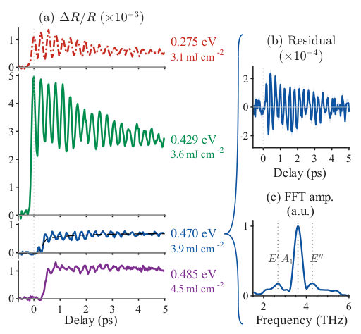
<figcaption class="paper-figure-caption"><b>Fig 1.</b> FIG. 1. Representative transient reflectivities and coherent- phonon extraction. (a) Unscaled ∆R/R traces on a common amplitude scale; dash-dotted curves denote the longer-pulse setup. For photon energies ≤0.429 eV, t = 0 marks the first transient maximum; higher-energy traces retain the 0.429-eV delay zero. The black dashed curve is the 0.470-eV back- ground fit [20]. (b) Background-subtracted residual for the 0.470 eV pump data; shading denotes the standard error of the mean (SE). (c) Fourier spectrum for 0 ≤t ≤5 ps for the data in (b), with the E′, A1, and E′′ modes marked.</figcaption>
</figure>
<figure class="paper-figure-card">
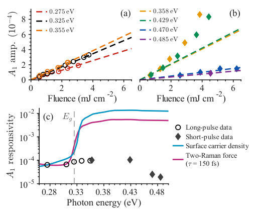
<figcaption class="paper-figure-caption"><b>Fig 2.</b> FIG. 2. Fluence dependence and spectral evolution of the co- herent A1 response. (a),(b) Peak Fourier amplitudes versus incident fluence for long-pulse (open circles) and short-pulse (filled diamonds) data; dashed lines show linear fits. (c) Re- sponsivity versus photon energy compared with surface pho- tocarrier density at fixed fluence (cyan) and two-Raman force magnitude at ΩA1 (magenta), calculated from aT T for a 150-fs pulse. Both curves are scaled to the lowest-energy responsiv- ity. The gray dashed line marks Eg ≃0.325 eV.</figcaption>
</figure>
<figure class="paper-figure-card">

<figcaption class="paper-figure-caption"><b>Fig 3.</b> FIG. 3. Effects of finite-time carrier thermalization on coher- ent phonon dynamics. (a) Instantaneous (black) and partially prompt, slowly rising (red) equilibrium shifts with equal max- ima. A weak long-time decay ensures a well-defined Fourier transform. Inset: Driving-force spectra over the full time win- dow; the dashed line marks the 3.6-THz A1 frequency. (b) Corresponding phonon trajectories with identical frequency and damping.</figcaption>
</figure>
<figure class="paper-figure-card">
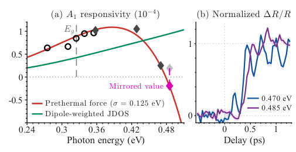
<figcaption class="paper-figure-caption"><b>Fig 4.</b> FIG. 4. (a) Measured A1 responsivities (symbols), scaled prethermal force (red), and dipole-weighted JDOS (green) for σ = 0.125 eV. Circles and diamonds denote long- and short-pulse data. Light-gray and magenta diamonds show the measured and sign-inverted 0.485-eV values, joined by a magenta dashed line. The vertical gray dashed line marks Eg ≃0.325 eV; positive force contracts the Te helix. (b) 0.470-eV (blue) and 0.485-eV (purple) traces from Fig. 1, nor- malized to their 4–5 ps plateaus; shaded bands show SE.</figcaption>
</figure>
</div>

<p><strong>Summary.</strong> This study analyzes how coherent phonons are generated in semiconductors when excited by ultrafast lasers. By comparing experimental measurements across the band gap with theoretical models, the authors show that the process is controlled by the specific electronic transitions (transition selectivity) rather than the total thermalized carrier density. This highlights the importance of non-equilibrium carrier dynamics in condensed matter response.</p>
<p><strong>Why it may be interesting.</strong> The work provides a detailed, first-principles understanding of non-equilibrium carrier dynamics, showing how transient, non-thermalized populations dictate macroscopic material responses like lattice vibrations.</p>
<details>
<summary>Detailed structure</summary>
<p><strong>Main problem.</strong> The paper investigates the physical mechanism governing the generation of coherent optical phonons in semiconductors following ultrafast laser excitation.</p>
<p><strong>Main result.</strong> The coherent phonon amplitude depends on transition selectivity, weighted by optical matrix elements, rather than simply on the total thermalized carrier density, contradicting simpler thermal models.</p>
<p><strong>Method.</strong> The authors combine systematic ultrafast laser measurements across the band gap with first-principles DFT calculations to model the photoexcitation dynamics.</p>
<p><strong>Model / system.</strong> The system is a semiconductor (Tellurium) excited by tunable ultrafast lasers near the electronic band gap. The theoretical framework compares thermalized carrier models (DECP) against a transition-resolved prethermal force model.</p>
<p><strong>Key observables.</strong> Coherent amplitude of the fully symmetric A1 phonon mode, and the spectral dependence of this amplitude on the excitation photon energy.</p>
<p><strong>Important parameters / regimes.</strong> Excitation wavelength tuning across the band gap, and the resulting excited transition state lifetime (estimated to be a few femtoseconds).</p>
<p><strong>Assumptions / limitations.</strong> The prethermal force model assumes the force is governed by the sum over optical transitions weighted by coupling strengths and transition probabilities.</p>
<p><strong>Figures summary.</strong> Figures show the spectral evolution of the coherent A1 response vs. fluence, comparing the measured responsivity against predictions from thermalized models and the successful fit using the prethermal force model.</p>
<p><strong>Paper structure.</strong> The paper progresses by first identifying the problem (phonon generation mechanism), testing existing models (DECP theory), demonstrating their failure against spectral measurements, and finally proposing and validating a transition-resolved prethermal force model.</p>
</details>
<details>
<summary>Abstract</summary>
<p>Ultrafast laser excitation of carriers in semiconductors often results in the creation of fully symmetric coherent optical phonons, typically understood in terms of a thermalized transient carrier population. We test this understanding with systematic measurements and first-principles calculations of the photon-energy dependence of ultrafast-laser-driven coherent phonon generation in tellurium, using excitation wavelengths around the electronic band gap. We observe that, contrary to the expectations of models assuming a thermalized carrier population, the coherent amplitude of the fully symmetric $A_1$ mode changes only weakly when tuning wavelength across the band gap. The measured spectral dependence is instead reproduced by a transition-resolved prethermal force weighted by optical matrix elements and band- and momentum-dependent $A_1$ deformation potentials. Fitting this model to the data yields an excited transition state lifetime of a few femtoseconds. These results identify transition selectivity, rather than a thermalized total carrier density, as a key factor controlling coherent-phonon generation in semiconductors excited near a band gap.</p>
</details>
<p><sub><a href="#top">↑ back to top</a></sub></p>

<p><a id="paper-2610.18000"></a></p>
<h3 id="development-and-experimental-implementation-of-noise-characterisation-techniques-on-a-superconducting-quantum-processor"><a href="http://arxiv.org/abs/2610.18000v1">Development and experimental implementation of noise characterisation techniques on a superconducting quantum processor</a></h3>
<p><strong>Authors:</strong> Nelson M. M. Fernández, Francesco Grieco, Hetta Vappula, Stefano Mangini, Boris Sokolov, Elsi-Mari Borrelli, Matteo A. C. Rossi, Sergey N. Filippov, N. Walter Talarico<br>
<strong>Type:</strong> experiment · <strong>Category:</strong> quantum information and computing · <strong>PDF:</strong> <a href="https://arxiv.org/pdf/2610.18000v1">https://arxiv.org/pdf/2610.18000v1</a><br>
<strong>Analysis basis:</strong> full PDF text, analyzed in chunks
<strong>Topic relevance:</strong> 🔥 <code>QC/QI experiment</code> <strong>4/5</strong> · <code>methods for driven-dissipative</code> <strong>3/5</strong> · <code>correlated / nonlocal dissipation</code> <strong>2/5</strong> · <code>quantum measurements</code> <strong>2/5</strong></p>
<div class="figure-strip-hint">↔ Scroll figures horizontally</div>
<div class="paper-figures-scroll">
<figure class="paper-figure-card">
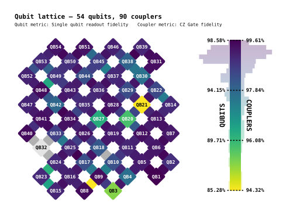
<figcaption class="paper-figure-caption"><b>Fig 1.</b> FIG. 1: Coupling map and typical readout and CZ-gate fidelities of VTT Q50 [45]. Although the physical hard- ware topology labels start at 1, the software implemen- tation adopts 0-based indexing. The qubit labels are otherwise contiguous, except for the missing QB32. Ac- cordingly, the Qiskit backend reports 53 rather than 54 qubits, accounting for the deactivated qubit.</figcaption>
</figure>
<figure class="paper-figure-card">
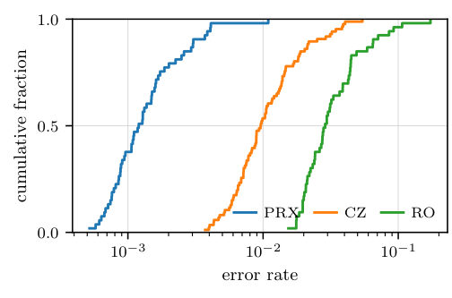
<figcaption class="paper-figure-caption"><b>Fig 2.</b> FIG. 2: Cumulative distribution of PRX-gate, CZ-gate, and readout (RO) infidelities across VTT Q50 [45]. Each curve is the empirical distribution over all calibrated qubits, or all calibrated couplers, of the calibration set of 2026-08-21; the medians are 1.2×10−3, 9.6×10−3 and 2.9 × 10−2 respectively.</figcaption>
</figure>
<figure class="paper-figure-card">
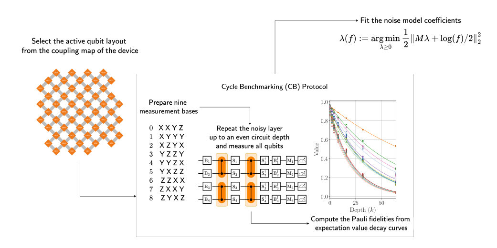
<figcaption class="paper-figure-caption"><b>Fig 3.</b> FIG. 3: Noise learning protocol. After selecting the active qubit layout for the characterisation experiment, the cycle benchmarking (CB) protocol is used to determine the Pauli fidelity estimates required for fitting the noise model parameters.</figcaption>
</figure>
<figure class="paper-figure-card">
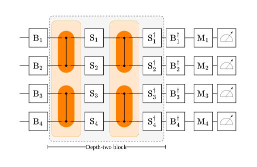
<figcaption class="paper-figure-caption"><b>Fig 4.</b> FIG. 4: Structure of the cycle benchmarking circuit for a depth-two block consisting of two layers of concurrent noisy CZ gates interleaved by single-qubit gates and pre- ceded by state-preparation gates Bi. In general, after a depth-d block, the inverse of the state preparation basis gates is applied, followed by measurement twirling gates Mi, randomly sampled from identity I and X gates. Fi- nally, all qubits are measured.</figcaption>
</figure>
<figure class="paper-figure-card">

<figcaption class="paper-figure-caption"><b>Fig 5.</b> FIG. 5: Basis selection protocol: Given the processor coupling map and the selected physical-qubit layout, if the qubit ordering satisfies the condition of [24, Theorem SIV.1], then there exist nine bases such that for each pair of physically connected qubits, the entire set {X, Y, Z}⊗2</figcaption>
</figure>
</div>

<p><strong>Summary.</strong> This paper details the development and experimental implementation of advanced noise characterization techniques on a superconducting quantum processor. By revising benchmarking protocols and extending tensor-network tomography, the authors successfully map the noise structure and validate noise models against physical circuits. This research is crucial for understanding hardware limitations and estimating the reliable scale of quantum computation.</p>
<p><strong>Why it may be interesting.</strong> This work provides concrete, hardware-specific methodologies for quantifying noise in superconducting qubits, which is foundational knowledge for any theoretical physicist working on open quantum systems or quantum computation.</p>
<details>
<summary>Detailed structure</summary>
<p><strong>Main problem.</strong> The paper addresses the critical need to accurately characterize noise sources in superconducting quantum processors to enable robust error mitigation and estimate achievable circuit sizes.</p>
<p><strong>Main result.</strong> The developed noise characterization techniques allow for the extraction and validation of approximate sublayer noise models, demonstrating that the total estimation error can be kept below 13% for moderately deep circuits.</p>
<p><strong>Method.</strong> The authors employ revised cycle-benchmarking protocols and extended tensor-network tomography methods to map the noise structure by measuring the decay of Pauli expectation values.</p>
<p><strong>Model / system.</strong> The work is performed on a superconducting quantum processor with a square-lattice topology (VTT Q50), utilizing transmon-based qubits and flux-tunable couplers.</p>
<p><strong>Key observables.</strong> Pauli expectation values (decay curves), gate infidelities (PRX, CZ, RO), and the total estimation error in benchmark circuits.</p>
<p><strong>Important parameters / regimes.</strong> Noise rates ($\lambda_k$), circuit depth (L=15), and width (N=50) for performance estimation.</p>
<p><strong>Assumptions / limitations.</strong> Key assumptions include treating single-qubit gate errors as negligible compared to two-qubit errors, and the noise channel acting before each layer of Clifford gates.</p>
<p><strong>Figures summary.</strong> Figures illustrate the coupling map and fidelities of the processor, the cumulative distribution of gate infidelities, and comparisons between measured signal decay and predictions from single-layer versus jointly fitted multi-layer noise models.</p>
<p><strong>Paper structure.</strong> The paper progresses by first introducing the necessity of noise characterization, detailing the revised cycle-benchmarking and tensor-network methods, and finally applying these tools to map the noise structure and validate the learned models against physical and chemical benchmark circuits.</p>
</details>
<details>
<summary>Abstract</summary>
<p>Noise characterisation not only enables error mitigation but also provides valuable information about the intrinsic performance of a quantum device, identifying dominant error contributions and bounding noise stability well beyond the aggregated calibration data. Deploying such methods on a specific hardware topology must combine efficiency and accuracy, assess noise stability, and validate the reconstructed noise model. Here we develop and implement these methods on a superconducting processor with square-lattice topology. First, we revise the cycle-benchmarking protocol and reduce the bias arising from unlearnable degrees of freedom via a regularised cost function. Second, we extend a previously developed tensor-network tomography method to match the device layout and show how its accuracy can be improved by repeated layer execution. Both methods allow approximate sublayer noise models to be extracted from parent ones. Using noise characterisation as a tool, we map the noise structure, track drift, and validate the adequacy of the learnt noise models against experimentally observed noisy estimations in benchmark physical and chemistry circuits. These results inform further improvements in the underlying technology and provide estimates of the size of noise-mitigated circuits that the device can support.</p>
</details>
<p><sub><a href="#top">↑ back to top</a></sub></p>

<p><a id="paper-2610.18500"></a></p>
<h3 id="macroscopic-fluctuation-theory-of-stochastic-systems-undergoing-monitoring"><a href="http://arxiv.org/abs/2610.18500v1">Macroscopic fluctuation theory of stochastic systems undergoing monitoring</a></h3>
<p><strong>Authors:</strong> João Costa, Pedro Ribeiro, Andrea De Luca<br>
<strong>Type:</strong> theory · <strong>Category:</strong> statistical mechanics · <strong>PDF:</strong> <a href="https://arxiv.org/pdf/2610.18500v1">https://arxiv.org/pdf/2610.18500v1</a><br>
<strong>Analysis basis:</strong> full PDF text, analyzed in chunks
<strong>Topic relevance:</strong> 🔥 <code>quantum measurements</code> <strong>4/5</strong> · <code>Keldysh / 2PI / non-Gaussian methods</code> <strong>2/5</strong> · <code>Full counting statistics</code> <strong>1/5</strong> · <code>correlated / nonlocal dissipation</code> <strong>1/5</strong> · <code>driven-dissipative phase transition</code> <strong>1/5</strong> · <code>methods for driven-dissipative</code> <strong>1/5</strong> · <code>non-equilibrium universality</code> <strong>1/5</strong></p>
<div class="figure-strip-hint">↔ Scroll figures horizontally</div>
<div class="paper-figures-scroll">
<figure class="paper-figure-card">
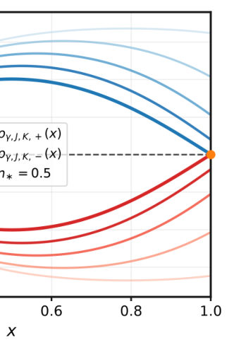
<figcaption class="paper-figure-caption"><b>Fig 1.</b> Figure 1: The two saddle-point branches generated by Eq. (46) are plotted for several values of K for SSEP at E = 4, J = 1, γ = 0, and n∗= 1/2. The line intensity decreases as K increases.</figcaption>
</figure>
<figure class="paper-figure-card">
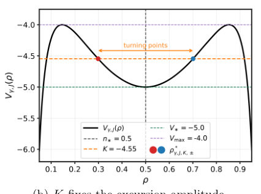
<figcaption class="paper-figure-caption"><b>Fig 2.</b> Figure 2: In panel (a), we show the two ± saddle-point profiles that satisfy condition C for SSEP at E = 4, J = 1, γ = 0, and n∗= 1/2. In panel (b), we plot the corresponding effective potential Vγ,J(ρ), marking the value of K that satisfies condition C in yellow. K fixes the turning points of the saddle-point profiles, which we show in red and blue.</figcaption>
</figure>
<figure class="paper-figure-card">

<figcaption class="paper-figure-caption"><b>Fig 3.</b> Figure 4: Qγ,J(K) −Qγ,J(V∗) vs K −V∗, for different values of J, near the local critical current. At J = Jloc c (light orange), the perturbative condition is Q′ γ,Jloc c (V∗) = Gγ,Jloc c (V∗) = 0. For J &lt; Jloc c , the global minimum of Qγ,J(K) is</figcaption>
</figure>
<figure class="paper-figure-card">

<figcaption class="paper-figure-caption"><b>Fig 4.</b> Figure 5: Possible scenarios for the behavior of Qγ,J(K) −Qγ,J(V∗) as a function of K −V∗at J = Jloc c , where Q′(V∗) = G(V∗) = 0. The lighter curves sketch the profiles immediately before and after the transition. Panels (a) and (b) show cases when the local criterion (sign of Q′′(V∗)) is sufficient to detect the order of the transition; panel (c) shows a case when a distant minimum can still make the transition first order even though Q′′(V∗) &gt; 0; this clarifies why Q′′(V∗) &gt; 0 is a necessary but not sufficient condition for a putative second order transition.</figcaption>
</figure>
<figure class="paper-figure-card">

<figcaption class="paper-figure-caption"><b>Fig 5.</b> Figure 6: Nature of the putative critical point (J = Jc) for the particle-hole- symmetric KLS model at ϵ = 0.6 and δ = 0. Gray denotes the region with no DPT, while blue and red indicate first- and second-order DPTs, respectively. The solid black curve corresponds to Jc = 0. This curve is distinct from the gray dotted line, Jloc c = 0, which gives the local condition for the onset of a DPT. The solid red curve represents our derived condition B∗(E, γ) = 0 for the boundary between first- and second-order transitions, in agreement with the numerical results.</figcaption>
</figure>
</div>

<p><strong>Summary.</strong> This work develops a macroscopic fluctuation theory to describe classical lattice gases undergoing continuous monitoring. It shows that measurement introduces a confining term into the system's effective action, fundamentally altering transport properties. The theory predicts that monitoring can suppress dynamical phase transitions and provides detailed scaling laws for current fluctuations near boundaries.</p>
<p><strong>Why it may be interesting.</strong> The connection between continuous monitoring (a measurement process) and the modification of macroscopic fluctuation theories is highly relevant to open quantum systems, as measurement back-action fundamentally alters system dynamics and steady states.</p>
<details>
<summary>Detailed structure</summary>
<p><strong>Main problem.</strong> Developing a macroscopic fluctuation theory for diffusive classical lattice gases subjected to continuous coarse-grained monitoring.</p>
<p><strong>Main result.</strong> Observation adds a quadratic confining term to the MFT action, and monitoring can suppress dynamical phase transitions, potentially changing their order.</p>
<p><strong>Method.</strong> The authors use Macroscopic Fluctuation Theory (MFT) within the hydrodynamic limit to analyze large-deviation functions for monitored stochastic systems.</p>
<p><strong>Model / system.</strong> The system is a diffusive classical lattice gas on a bounded domain, modeled as a continuous time Markov process. The analysis focuses on the coarse-grained density and current fields.</p>
<p><strong>Key observables.</strong> The current large-deviation function, the MFT action, the particle density profile, and the cumulants of the current.</p>
<p><strong>Important parameters / regimes.</strong> The measurement regime (typical-outcome/quenched), the mobility ($\sigma(
ho)$), and the boundary conditions (e.g., vanishing mobility at boundaries).</p>
<p><strong>Assumptions / limitations.</strong> The analysis is restricted to the coarse-grained (hydrodynamic) limit and assumes the typical-outcome (quenched) regime for measurements.</p>
<p><strong>Figures summary.</strong> Figure 19 illustrates the convergence of the rate function $\phi_\gamma(J)$ for a monitored SSEP, showing both bulk convergence and boundary-layer profile convergence after appropriate rescaling.</p>
<p><strong>Paper structure.</strong> The paper builds the theory by establishing the MFT framework for monitored systems, deriving the effect of observation on the action, and then applying this to specific models like the SSEP to analyze phase transition suppression and current statistics.</p>
</details>
<details>
<summary>Abstract</summary>
<p>We develop a macroscopic fluctuation theory for diffusive classical lattice gases subject to continuous coarse-grained monitoring. Treating measurements in the typical-outcome (quenched) regime, we show that observation adds a quadratic confining term to the MFT action that pins the density to its hydrodynamic profile. We derive sufficient conditions under which, in the presence of monitoring, the current large-deviation function remains convex, the additivity principle holds, and dynamical phase transitions are excluded. For particle-hole-symmetric one-dimensional models we find that monitoring suppresses dynamical phase transitions and can change their order from second to first, as we demonstrate in the Katz--Lebowitz--Spohn model. In the strong-measurement limit, we find that the current distribution becomes Gaussian and determine the scaling of its cumulants: they follow simple power laws when the mobility remains nonzero throughout the system, but exhibit anomalous logarithmic scaling when the mobility vanishes at the boundaries.</p>
</details>
<p><sub><a href="#top">↑ back to top</a></sub></p>

<p><a id="paper-2610.18482"></a></p>
<h3 id="lifting-quantum-state-discrimination-framework-for-mid-circuit-measurements"><a href="http://arxiv.org/abs/2610.18482v1">Lifting: Quantum State Discrimination Framework for Mid-Circuit Measurements</a></h3>
<p><strong>Authors:</strong> Chi Zhang, Neel Vora, Yilun Xu, Gang Huang, Fan Chen, Lei Jiang<br>
<strong>Type:</strong> experiment · <strong>Category:</strong> quantum information and computing · <strong>PDF:</strong> <a href="https://arxiv.org/pdf/2610.18482v1">https://arxiv.org/pdf/2610.18482v1</a><br>
<strong>Analysis basis:</strong> full PDF text, analyzed in chunks
<strong>Topic relevance:</strong> 🔥 <code>QC/QI experiment</code> <strong>4/5</strong> · <code>quantum measurements</code> <strong>3/5</strong> · <code>methods for driven-dissipative</code> <strong>2/5</strong></p>
<div class="figure-strip-hint">↔ Scroll figures horizontally</div>
<div class="paper-figures-scroll">
<figure class="paper-figure-card">
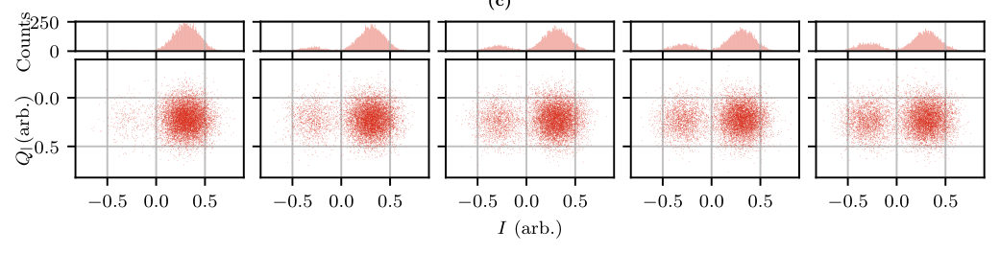
<figcaption class="paper-figure-caption"><b>Fig 1.</b> FIG. 1. State deterioration reflected in readout-distribution changes in the five-cycle QR-Stabilizer workload. (a) Core circuit with a measured data qubit and a phase-kickback ancilla. Lifting proxy wires are omitted. (b) SPAM references for preparation labels 0 (blue) and 1 (red) on qubit 51 of ibm fez. 10,000 shots per class are sampled from the reference acquisitions for display. (c) Target-readout I–Q distributions ordered from cycles c1 to c5. (d) Equal-prior kernel density estimation (KDE) Bayes-risk estimates comparing the SPAM-0 reference with each ideal-1 target cycle, SPAM-trained NN-based QSD error rates, and transferred digital-error estimates. The curve labeled ibm fez...</figcaption>
</figure>
<figure class="paper-figure-card">
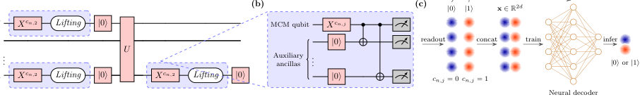
<figcaption class="paper-figure-caption"><b>Fig 2.</b> FIG. 2. Lifting workflow. (a) Context-matched calibration executions prepare reference labels and place encoded readout at the workload’s measurement locations. (b) Local repetition encoding couples the labeled MCM qubit to d −1 auxiliary ancillas initialized to |0⟩. Concurrent readout supplies their joint I–Q readout signals. (c) The d I–Q pairs are concatenated into a 2d-component feature vector. Reference labels supervise neural training, and inference assigns a logical outcome to each target observation. Optional confidence selection retains a subset of observations before reporting retained-shot accuracy.</figcaption>
</figure>
<figure class="paper-figure-card">

<figcaption class="paper-figure-caption"><b>Fig 3.</b> FIG. 3. Error rates across five MCM cycles: the KDE Bayes- risk estimate, SPAM-trained NN-based QSD, the transferred ibm fez digital estimate from Fig. 1(d), and single-channel NN-based QSD with cycle-matched in situ calibration. The risk curve compares constructed reference–target distribu- tions. The decoder curves evaluate target shots. Contextual calibration changes the training references, while this com- parison retains the single-channel observation space.</figcaption>
</figure>
<figure class="paper-figure-card">
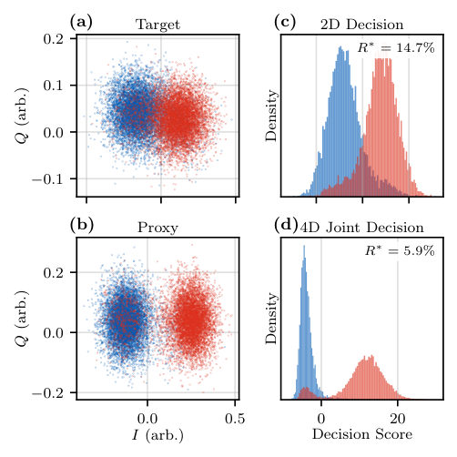
<figcaption class="paper-figure-caption"><b>Fig 4.</b> FIG. 5. Target-only and joint I–Q readout discrimination for d = 2 on ibm fez, using 10,000 shots per preparation la- bel. (a,b) Target and auxiliary (proxy) I–Q scatter, with blue and red denoting reference labels 0 and 1, respectively. (c,d) Signed quadratic-discriminant scores s1 −s0 from the two- dimensional target observations and four-dimensional joint I–Q readout signals. Annotated risks are equal-prior KDE- based estimates of distributional overlap, rather than held-out classifier error rates.</figcaption>
</figure>
<figure class="paper-figure-card">

<figcaption class="paper-figure-caption"><b>Fig 5.</b> FIG. 6. IBM Fez assignment accuracy versus encoding dis- tance d, comparing hardware measurements (emp.) with the fitted empirical model in Eq. (18). The curve labeled theo. uses κ = 0.45 and α = 9.03, fitted for the displayed distance sweep.</figcaption>
</figure>
</div>

<p><strong>Summary.</strong> This paper introduces 'Lifting,' a novel framework designed to improve Quantum State Discrimination for noisy mid-circuit measurements on superconducting qubits. It tackles two key issues: the fundamental error limit (Bayes risk) and state deterioration caused by measurement history. By combining repetition encoding with context-aware, in situ calibration, the framework significantly boosts the reliability of quantum operations for error correction and computation.</p>
<p><strong>Why it may be interesting.</strong> The focus on hardware-aware error mitigation techniques like in situ calibration and advanced readout encoding directly impacts the feasibility of scaling quantum computation, which is of high interest to theorists studying open quantum systems.</p>
<details>
<summary>Detailed structure</summary>
<p><strong>Main problem.</strong> The paper addresses the challenge of accurately performing Quantum State Discrimination (QSD) for Mid-Circuit Measurements (MCMs) in superconducting quantum hardware, which is degraded by noise and state deterioration over time.</p>
<p><strong>Main result.</strong> The proposed 'Lifting' framework, which combines repetition encoding, neural decoding, and in situ calibration, successfully improves circuit success rates across various MCM workloads compared to static calibration methods.</p>
<p><strong>Method.</strong> The authors developed a framework that uses joint In-phase and Quadrature (I-Q) readout signals from auxiliary qubits (repetition encoding) and trains a neural network decoder using calibration data acquired contextually during the actual circuit execution (in situ calibration).</p>
<p><strong>Model / system.</strong> The work is implemented on superconducting quantum processors (e.g., IBM processors), utilizing dispersive readout interactions characterized by a Hamiltonian involving resonator and qubit coupling. The core process involves mapping continuous I-Q measurement signals to discrete quantum states.</p>
<p><strong>Key observables.</strong> Bayes Risk (fundamental error limit), I-Q readout distributions, Whole-trace accuracy, and final-syndrome correctness for quantum error correction circuits.</p>
<p><strong>Important parameters / regimes.</strong> The error rate is fundamentally bounded by the Bayes risk; state deterioration occurs on microsecond timescales during circuit execution.</p>
<p><strong>Assumptions / limitations.</strong> Static calibration based on isolated measurements is insufficient because it fails to account for state deterioration that occurs during the actual, dynamic workload execution.</p>
<p><strong>Figures summary.</strong> Figures illustrate state deterioration in qubit-reuse stabilizer workloads, comparing initial SPAM references to later, degraded readout distributions, and demonstrate the workflow of the Lifting framework using joint I-Q signals.</p>
<p><strong>Paper structure.</strong> The paper first establishes the problem of MCM noise and state deterioration relative to the Bayes risk limit. It then introduces the Lifting framework, detailing repetition encoding and in situ calibration. Finally, it validates the framework through experimental results on superconducting processors using stabilizer measurements, parity checks, and teleportation.</p>
</details>
<details>
<summary>Abstract</summary>
<p>Quantum computing promises new capabilities beyond classical computation. Mid-circuit measurements (MCMs) enable error correction and outcome-dependent control, but their reliability is limited by noise on superconducting hardware. These operations depend on accurate quantum state discrimination (QSD), which assigns measured signals to state labels. Neural network-based (NN-based) QSD improves this assignment, yet its error remains bounded below by the Bayes risk of the available readout distributions. A complementary challenge is state deterioration as successive measurements accumulate and circuit execution advances, making static calibration less representative of the workload. We present Lifting, a QSD framework that addresses both challenges through repetition encoding, neural decoding, and in situ calibration. Encoding supplies joint in-phase and quadrature (I-Q) readout signals from the target and auxiliary qubits, while contextual calibration trains the decoder for the conditions encountered during execution. Our theoretical analysis shows that retaining additional channels from a fixed joint distribution cannot increase Bayes risk and establishes sufficient conditions for contraction of an overlap-based upper bound. Experiments across three IBM processors evaluate the framework on repeated stabilizer measurement, parity-check, and teleportation workloads.</p>
</details>
<p><sub><a href="#top">↑ back to top</a></sub></p>

<p><a id="paper-2610.17228"></a></p>
<h3 id="observation-of-photon-bunching-in-broadband-multimode-thermal-light-enabled-by-temporal-imaging"><a href="http://arxiv.org/abs/2610.17228v1">Observation of Photon Bunching in Broadband Multimode Thermal Light Enabled by Temporal Imaging</a></h3>
<p><strong>Authors:</strong> Filip Sośnicki, Michał Mikołajczyk, Sanjay Kapoor, Dmitri B. Horoshko, Mikhail I. Kolobov, Michał Karpiński<br>
<strong>Type:</strong> experiment · <strong>Category:</strong> other · <strong>PDF:</strong> <a href="https://arxiv.org/pdf/2610.17228v1">https://arxiv.org/pdf/2610.17228v1</a><br>
<strong>Analysis basis:</strong> full PDF text, analyzed in chunks
<strong>Topic relevance:</strong> 🔥 <code>quantum optics experiment</code> <strong>4/5</strong> · <code>quantum measurements</code> <strong>2/5</strong> · <code>Full counting statistics</code> <strong>1/5</strong> · <code>interference shaping light</code> <strong>1/5</strong></p>
<div class="figure-strip-hint">↔ Scroll figures horizontally</div>
<div class="paper-figures-scroll">
<figure class="paper-figure-card">

<figcaption class="paper-figure-caption"><b>Fig 1.</b> FIG. 1. Time-resolved second-order autocorrelation measurement. (a) Hanbury Brown and Twiss (HBT) inter- ferometer comprising a 50:50 beamsplitter, two detectors, and a coincidence counter. (b) Temporal imaging (TI) preceding the HBT interferometer magnifies the signal timescale and, consequently, the time-resolved second-order autocorrelation, which reduces the required detector temporal resolution. (c) Normalized second-order coherence g(2)(τ) of thermal light for different numbers of modes K of the measured signal. For K ≈1, the broad correlation feature is resolved (solid blue line), while increasing K progressively narrows the feature (solid orange line). When its width falls below the...</figcaption>
</figure>
<figure class="paper-figure-card">
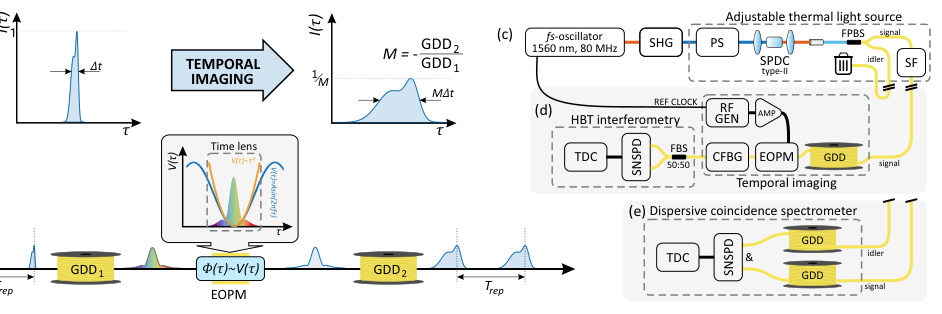
<figcaption class="paper-figure-caption"><b>Fig 2.</b> FIG. 2. Temporal imaging and experimental setup. (a) Temporal imaging reshapes an optical pulse by increasing its duration while preserving its temporal profile. (b) The temporal imaging system uses two group-delay dispersions (GDDs) together with temporal phase modulation. Each pulse is stretched by the first GDD, after which a quadratic temporal phase is applied. The second GDD then further stretches the pulse, retrieving the pulse’s magnified temporal envelope. It is a pulse-by-pulse process that temporally magnifies the pulses’ envelope without changing the pulse repetition period. (c, d, e) Schematic of the experimental setup. (c) An amplified fs-oscillator produces laser pulses that...</figcaption>
</figure>
<figure class="paper-figure-card">
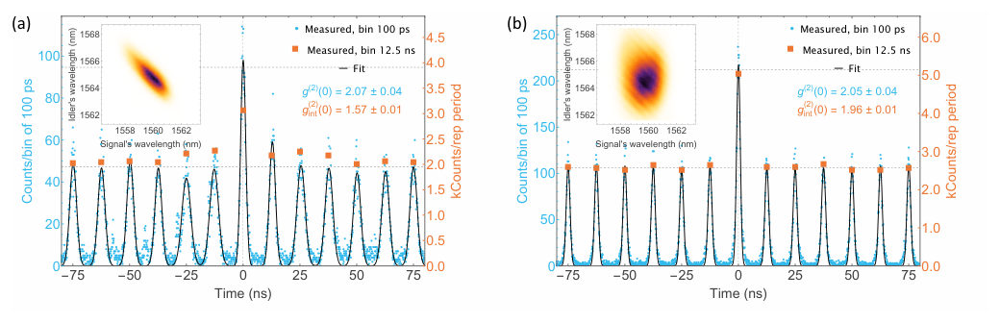
<figcaption class="paper-figure-caption"><b>Fig 3.</b> FIG. 3. Time-magnified photon count histograms. 660-fold temporal-magnified time-delayed coincident photon count histograms when pumping the SPDC with a spectral bandwidth of (a) 0.2 nm and (b) 0.9 nm, corresponding to Schmidt numbers K = 1.68 and K = 1.02, respectively. The temporally magnified measurement points were binned into 100 ps bins (corresponding to 150 fs through the 660 temporal magnification factor; blue) for high temporal resolution and into 12.5 ns bins (corresponding to the pulse repetition period, which is not temporally magnified; orange) for low temporal resolution. Notice the central peak is narrower as compared to the others in (a), while the same in (b), which shows...</figcaption>
</figure>
<figure class="paper-figure-card">
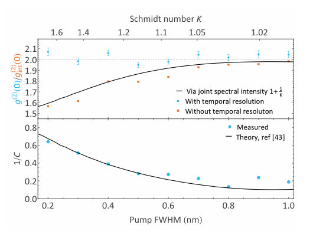
<figcaption class="paper-figure-caption"><b>Fig 4.</b> FIG. 4. Scaling with the number of modes. Top: Zero- delay values of the second-order coherence function g(2)(τ = 0) for a range of the effective number of modes K, controlled by varying the pump spectral bandwidth, measured with high (blue) and low (orange) temporal resolution. The dashed hor- izontal line indicates the maximal value of 2 expected for the thermal state, while the black solid line shows the de- tector temporal averaging effect as 1 + 1 K . Bottom: Ratio ∆tM/ √</figcaption>
</figure>
</div>

<p><strong>Summary.</strong> This paper introduces a novel technique called pre-detection temporal imaging to overcome detector limitations when measuring photon bunching in broadband thermal light. By temporally magnifying the optical field, the authors directly measured the expected thermal bunching signature ($g^{(2)}(0) = 2$) on ultrafast timescales. This establishes a general platform for advanced statistical optics measurements in quantum and biophysical contexts.</p>
<p><strong>Why it may be interesting.</strong> This work provides a powerful, general platform for broadband statistical optics, directly addressing the measurement limitations in quantum optics and biophysics that plague traditional correlation measurements.</p>
<details>
<summary>Detailed structure</summary>
<p><strong>Main problem.</strong> The primary challenge is observing the temporal photon bunching in broadband multimode thermal light, which is severely limited by the temporal resolution of conventional detectors.</p>
<p><strong>Main result.</strong> The authors successfully demonstrated the direct observation of thermal photon bunching ($g^{(2)}(0) = 2$) on sub-3.5 picosecond timescales using a novel technique.</p>
<p><strong>Method.</strong> They propose and implement 'pre-detection temporal imaging' using an electro-optic time lens to temporally magnify the optical field before measuring the intensity autocorrelation function in a standard Hanbury Brown-Twiss setup.</p>
<p><strong>Model / system.</strong> The experiment uses spontaneous parametric down-conversion (SPDC) to generate correlated photon pairs, treating the signal field as a thermal state. The core platform is the temporal imaging setup, which acts as a time lens with a demonstrated magnification factor of 660.</p>
<p><strong>Key observables.</strong> The normalized second-order autocorrelation function, $g^{(2)}(	au)$, and the zero-delay correlation value, $g^{(2)}(0)$.</p>
<p><strong>Important parameters / regimes.</strong> Temporal magnification factor (e.g., 660), spectral bandwidth (up to 250 GHz), and time resolution (sub-3.5 ps).</p>
<p><strong>Assumptions / limitations.</strong> The measurement relies on the assumption that the temporal imaging technique successfully overcomes the mode-averaging bottleneck inherent in measuring broadband thermal light.</p>
<p><strong>Figures summary.</strong> Figures illustrate the time-resolved second-order autocorrelation measurement, the experimental setup involving temporal imaging components, and quantitative results showing $g^{(2)}(0) \approx 2$ for both multimode and near-single-mode regimes.</p>
<p><strong>Paper structure.</strong> The paper establishes the theoretical limitations of measuring broadband thermal light bunching, introduces the temporal imaging platform, details the experimental implementation using SPDC and time lenses, and presents quantitative measurements confirming the observation of $g^{(2)}(0)=2$.</p>
</details>
<details>
<summary>Abstract</summary>
<p>Photons emitted by incoherent sources exhibit temporal bunching, a fundamental manifestation of Bose-Einstein statistics first observed by Hanbury Brown and Twiss (HBT). While intensity correlation measurements originated in astronomy and are now central across quantum technologies, biophysics, and spectroscopy, observing temporal bunching in broadband thermal light remains limited by detector temporal resolution. Conventional approaches - such as streak cameras or optical upconversion - introduce severe trade-offs in efficiency, bandwidth, or setup versatility. Here, we propose and demonstrate a third route: pre-detection temporal magnification of the optical field prior to measuring its intensity autocorrelation function in a conventional HBT setup. Using an electro-optic time lens with a temporal magnification of 660, we resolve the temporal intensity autocorrelation of broadband thermal light generated via non-degenerate spontaneous parametric down-conversion with a bandwidth of 250 GHz. This enables direct observation of thermal photon bunching on sub-3.5 picosecond timescales without narrow spectral filtering, establishing pre-detection temporal imaging as a general platform for broadband statistical optics, with applications spanning ultrafast quantum optics, biophysical imaging, and potentially stellar intensity interferometry.</p>
</details>
<p><sub><a href="#top">↑ back to top</a></sub></p>

<p><a id="paper-2610.18245"></a></p>
<h3 id="experimental-benchmarking-of-a-256-qubit-room-temperature-nv-diamond-quantum-processor-with-an-optically-programmable-biomolecular-quantum-bus"><a href="http://arxiv.org/abs/2610.18245v1">Experimental Benchmarking of a 256-Qubit Room-Temperature NV-Diamond Quantum Processor with an Optically Programmable Biomolecular Quantum Bus</a></h3>
<p><strong>Authors:</strong> Adams Ivanov, Daniela Herrmann, Erick Giovani Sperandio Nascimento<br>
<strong>Type:</strong> experiment · <strong>Category:</strong> quantum information and computing · <strong>PDF:</strong> <a href="https://arxiv.org/pdf/2610.18245v1">https://arxiv.org/pdf/2610.18245v1</a><br>
<strong>Analysis basis:</strong> full PDF text, analyzed in chunks
<strong>Topic relevance:</strong> 🔥 <code>QC/QI experiment</code> <strong>4/5</strong> · <code>quantum measurements</code> <strong>1/5</strong> · <code>quantum optics experiment</code> <strong>1/5</strong></p>
<div class="figure-strip-hint">↔ Scroll figures horizontally</div>
<div class="paper-figures-scroll">
<figure class="paper-figure-card">
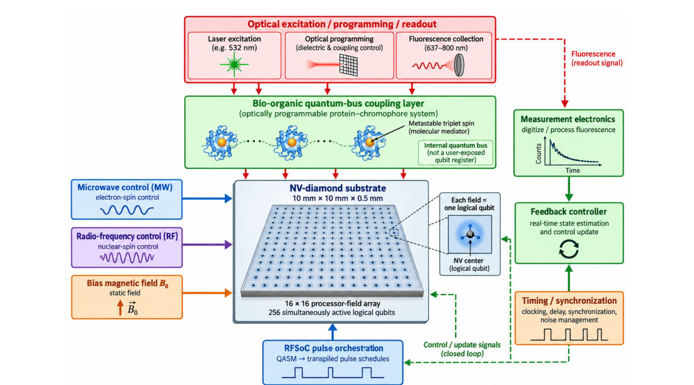
<figcaption class="paper-figure-caption"><b>Fig 1.</b> Figure 1: Processor-level architecture of Zeus-256, showing the NV-diamond substrate, optical excitation/programming/readout, MW and RF control, the optically programmable biomolecular quantum-bus coupling layer, measurement electronics, bias field, timing/synchronization, RFSoC pulse orchestration, and the feedback controller. The biomolecular layer contains the internal protein–chromophore triplet-spin mediator described in Sections 3.3 and 4; it is an interaction resource and not an additional user-exposed qubit register.</figcaption>
</figure>
<figure class="paper-figure-card">
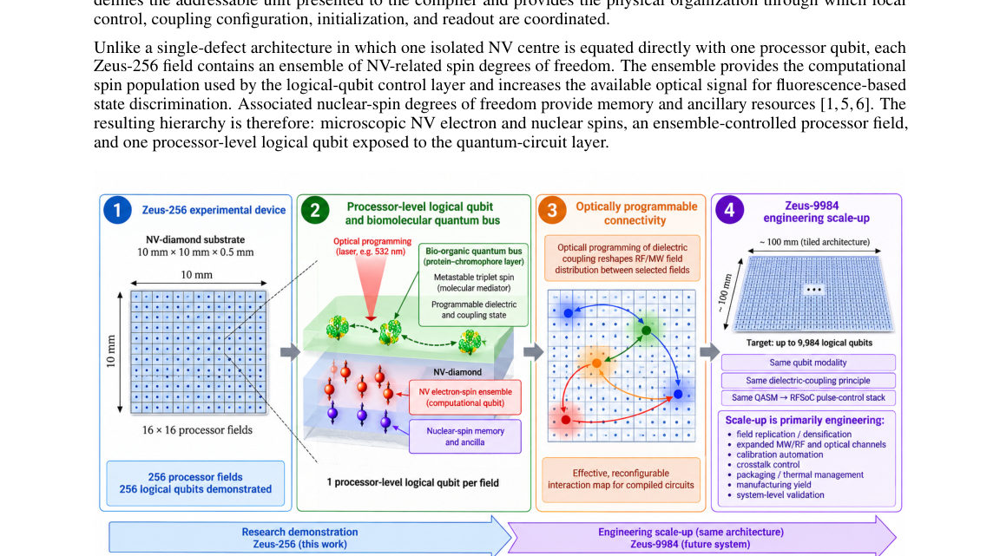
<figcaption class="paper-figure-caption"><b>Fig 2.</b> Figure 2: Demonstrated Zeus-256 logical-qubit hierarchy and engineering scale-up path to Zeus-9984. The demonstrated 16 × 16 Zeus-256 register and one processor-level logical-qubit field are shown together with the optically programmable biomolecular quantum-bus coupling layer, which contains an internal metastable electronic triplet-spin mediator and provides effective local and long-range interaction pathways for compiled circuits. The figure also shows the principal engineering tasks associated with scaling the same architecture toward the target of 9,984 processor-level logical qubits.</figcaption>
</figure>
<figure class="paper-figure-card">

<figcaption class="paper-figure-caption"><b>Fig 3.</b> Figure 3: Processor-level schematic of the Zeus biomolecular quantum bus. The optically programmable biomolecular layer contains a proprietary protein–chromophore spin system similar to EYFP, incorporating a metastable electronic triplet spin degree of freedom used internally as part of the quantum bus. This molecular spin subsystem is an interaction mediator and is not exposed as an additional processor-level logical-qubit register. Optical programming changes the dielectric and coupling state of the biomolecular layer, while synchronized MW/RF control and fluorescence readout operate on selected NV-diamond processor-level logical qubits. The programmed material supports both local and...</figcaption>
</figure>
<figure class="paper-figure-card">
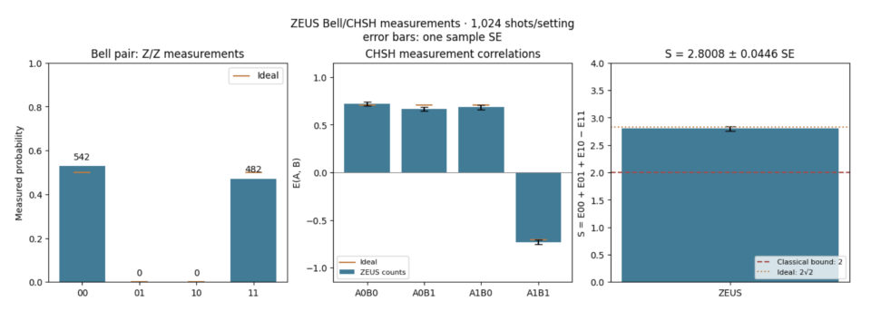
<figcaption class="paper-figure-caption"><b>Fig 4.</b> Figure 4: Bell–CHSH measurement results for Zeus. Left: Z/Z Bell-pair output probabilities. Centre: measured CHSH correlators. Right: measured CHSH parameter relative to the classical and Tsirelson bounds. Error bars denote one-sample standard errors.</figcaption>
</figure>
<figure class="paper-figure-card">
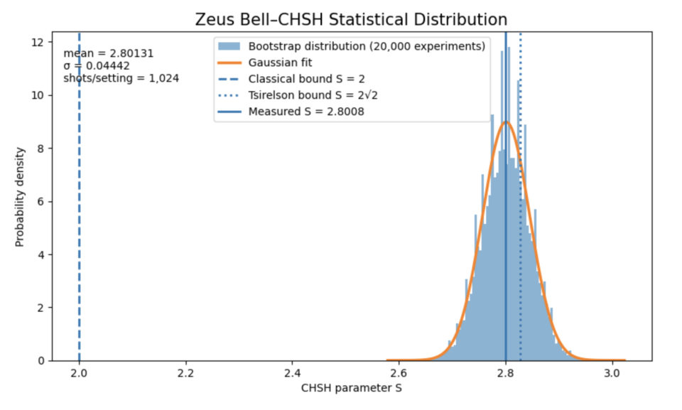
<figcaption class="paper-figure-caption"><b>Fig 5.</b> Figure 5: Bootstrap distribution of the Zeus CHSH parameter using 20,000 resampled experiments. The distribution has mean 2.80131 and σ = 0.04442; the directly measured value is S = 2.8008.</figcaption>
</figure>
</div>

<p><strong>Summary.</strong> This paper reports on Zeus-256, a large-scale, room-temperature NV-diamond quantum processor featuring 256 logical qubits. It demonstrates the execution of complex quantum algorithms, including Shor's factorization, using a novel, programmable biomolecular quantum bus for long-range entanglement. The results validate the system's capability for large-scale, controlled quantum computation.</p>
<p><strong>Why it may be interesting.</strong> The integration of a biomolecular, optically programmable bus to mediate long-range interactions in a solid-state diamond platform is highly relevant for building scalable quantum interconnects and addressing connectivity limitations in solid-state quantum computing.</p>
<details>
<summary>Detailed structure</summary>
<p><strong>Main problem.</strong> Developing scalable quantum processors that can simultaneously address qubit coherence, control fidelity, readout, inter-qubit connectivity, and overall system complexity at room temperature.</p>
<p><strong>Main result.</strong> The authors demonstrated a 256-qubit processor executing complex algorithms like Shor's factorization and Grover search with high fidelity, utilizing a novel biomolecular quantum bus for reconfigurable interactions.</p>
<p><strong>Method.</strong> The system benchmarks heterogeneous circuits (QFT, GHZ, Grover, Shor) by transpiling OpenQASM 2.0 circuits into sequences controlled by an RFSoC, involving microwave, optical, and bus-configuration pulses.</p>
<p><strong>Model / system.</strong> The platform is Zeus-256, a room-temperature NV-diamond processor featuring 256 active logical qubits. Connectivity is mediated by an optically programmable, proprietary biomolecular quantum bus layer.</p>
<p><strong>Key observables.</strong> Bell-CHSH value ($S = 2.8008 \pm 0.0446$), GHZ+ fidelity (99.8960%), Grover search success rate (93.55%), and successful factor recovery for 8-84 bit integers.</p>
<p><strong>Important parameters / regimes.</strong> 256 simultaneously active logical qubits in a $16 	imes 16$ array; execution time for 84-bit factorization was 551.694 ms.</p>
<p><strong>Assumptions / limitations.</strong> The biomolecular bus mediates interactions between spatially separated fields; the reported timing metrics are limited to processor control time and do not establish quantum advantage.</p>
<p><strong>Figures summary.</strong> Not specified in the notes, but the paper details performance metrics for various algorithms and correlation measurements.</p>
<p><strong>Paper structure.</strong> The paper introduces the Zeus-256 architecture, details the control sequence generation, presents benchmarks across a wide range of quantum algorithms, and reports quantitative results on entanglement fidelity and factorization success.</p>
</details>
<details>
<summary>Abstract</summary>
<p>We report Zeus-256, a room-temperature nitrogen-vacancy (NV) diamond processor with 256 simultaneously active processor-level logical qubits arranged in a 16 x 16 array. Each logical qubit combines an NV electron-spin ensemble with nuclear-spin memory and ancillary resources. OpenQASM 2.0 circuits are transpiled into RFSoC-controlled microwave, radio-frequency, optical, timing, measurement and bus-configuration sequences. An optically programmable proprietary protein-chromophore layer with an internal metastable-triplet spin mediator provides a reconfigurable biomolecular quantum bus for local and long-range interactions. Benchmarks cover QFT, GHZ entanglement, Grover search, arithmetic, variational, neural-network, graph-state and Shor-family circuits. Factor recovery is reported for 11 integers of 8-84 bits, with 10 attempts per instance; the 84-bit endpoint uses 256 qubits and 40,250,342 reported gates, with a reported execution time of 551.694 ms. Bell-CHSH measurements yield S = 2.8008 +/- 0.0446. Three-qubit Grover search returns the marked state in 958 of 1,024 shots (93.55%), compared with an ideal reference of 94.53%. A separate 30,000-shot population-and-parity protocol yields fixed-phase GHZ+ fidelity of 99.8960%, an estimated standard error of 0.2885 percentage points and a conservative physical 95% interval of [98.2342%, 100%]. Timing metrics are partial and do not establish quantum advantage. Scaling to 9,984 processor-level logical qubits is an engineering target, distinct from the demonstrated register.</p>
</details>
<p><sub><a href="#top">↑ back to top</a></sub></p>

<p><a id="paper-2610.18477"></a></p>
<h3 id="experimental-realization-of-a-c-shunt-flux-qubit-coupler-for-controlled-z-gates-between-transmons"><a href="http://arxiv.org/abs/2610.18477v1">Experimental Realization of a C-Shunt Flux-Qubit Coupler for Controlled-Z Gates between Transmons</a></h3>
<p><strong>Authors:</strong> Weiping Yuan, Silu Zhao, Li Li, Chenglin Deng, Zhenghe Liu, Yu Liu, Tianming Li, Mingchuan Wang, Bingjie Chen, Guihan Liang, Jiacheng Song, Jinming Guo, Shuaili Wang, Mingxuan Zhou, Xiaohui Song, Kai Xu, Heng Fan, Zhongcheng Xiang, Dongning Zheng<br>
<strong>Type:</strong> experiment · <strong>Category:</strong> quantum information and computing · <strong>PDF:</strong> <a href="https://arxiv.org/pdf/2610.18477v1">https://arxiv.org/pdf/2610.18477v1</a><br>
<strong>Analysis basis:</strong> full PDF text, analyzed in chunks
<strong>Topic relevance:</strong> 🔥 <code>QC/QI experiment</code> <strong>4/5</strong> · <code>quantum measurements</code> <strong>2/5</strong></p>
<div class="figure-strip-hint">↔ Scroll figures horizontally</div>
<div class="paper-figures-scroll">
<figure class="paper-figure-card">

<figcaption class="paper-figure-caption"><b>Fig 1.</b> FIG. 1. TCT architecture and numerical design window. (a) Schematic connectivity of Qubit 1, the C-shunt coupler, and Qubit 2. (b) False-color device micrograph. (c) Equivalent circuit of the TCT device, showing Qubit 1 and Qubit 2, the central C-shunt flux-qubit coupler, the qubit-coupler capaci- tances C1c and C2c, the residual direct capacitance C12, and the control and readout lines. (d) Numerical |geff|/2π map for ωc/2π = 6.5 GHz, with the trajectory minimizing |ζZZ| overlaid. (f) Numerical |ζZZ|/2π map for ωc/2π = 5.8 GHz, with the |geff|/2π = 10 MHz contour overlaid.</figcaption>
</figure>
<figure class="paper-figure-card">

<figcaption class="paper-figure-caption"><b>Fig 2.</b> FIG. 2. Basic characterization of the TCT device. (a) Pulsed spectroscopy sequence: an XY probe drives Qubit 1, and the coupler-dependent response is detected through Qubit 2. (b) Broad C-shunt coupler spectroscopy versus external flux. (c) Enlarged spectroscopy near the data-qubit transitions, with overlaid three-mode transition curves. (d) Pulsed conditional Ramsey sequence for measuring the residual ZZ interaction, with the spectator qubit prepared using either I or Xπ. (e) Corresponding Ramsey maps. (f) Extracted ζZZ/2π and theoretical contributions. (g) Pulse sequence for extracting the effective transverse coupling from swap oscillations. (h) Swap-oscillation data. (i) Extracted...</figcaption>
</figure>
<figure class="paper-figure-card">
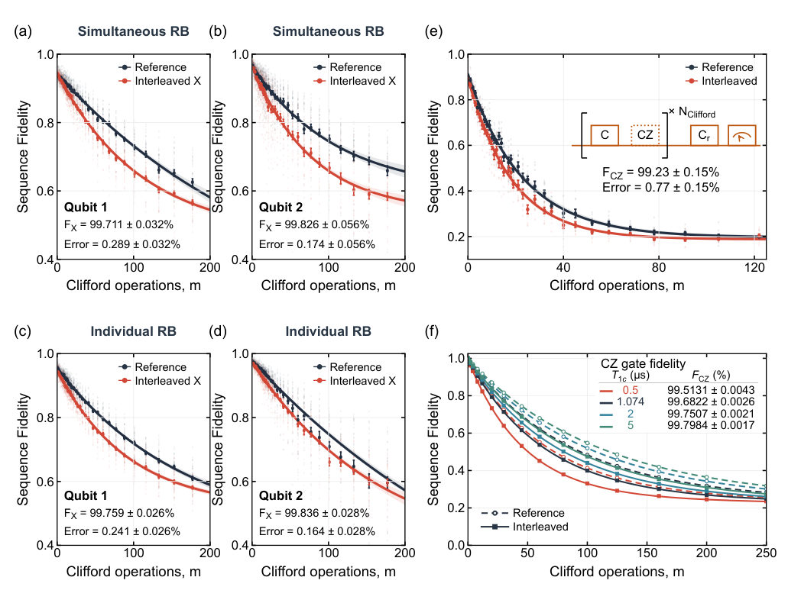
<figcaption class="paper-figure-caption"><b>Fig 3.</b> FIG. 3. Single-qubit and CZ randomized benchmarking (RB) and error analysis. (a,b) Simultaneous X-interleaved RB for Qubit 1 and Qubit 2. (c,d) Corresponding individual measurements. (e) Reference and CZ-interleaved RB for the 45 ns CZ gate, giving FCZ = 99.23(15)%. The inset shows the RB sequence. In (a)–(e), the reference and interleaved data are shown in dark colors and red, respectively. (f) Simulated reference (dashed lines, open circles) and CZ-interleaved (solid lines, squares) RB for four assumed coupler lifetimes, with data-qubit T1 = 17.50 and 25.17 µs from Table I. The simulations use a fixed, numerically optimized 45 ns CZ pulse and 20 ns single-qubit rotations, with relaxation...</figcaption>
</figure>
<figure class="paper-figure-card">

<figcaption class="paper-figure-caption"><b>Fig 4.</b> FIG. 4. Numerical analysis of spectral collisions and spectator interactions. (a) Schematic of a possible 3 × 3 nearest-neighbor array of negatively anharmonic transmon data qubits Q1–Q9 (blue crosses), linked by positively anharmonic, flux-tunable C-shunt couplers (pink links), denoted Cij for the link between Qi and Qj. (b) Bare-state |020⟩–|101⟩collision frequency for a representative cell Q1–C12–Q2, versus coupler anharmonicity. Other cells are omitted from this single-cell estimate. The pale pink band shows the collision range over the fixed mean-qubit-frequency allocation, and the gray band denotes the gate-control band. Markers identify representative TTT values and the TCT...</figcaption>
</figure>
<figure class="paper-figure-card">
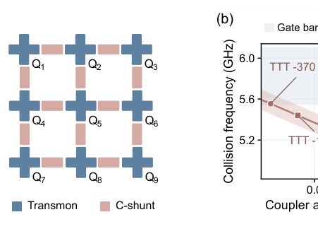
<figcaption class="paper-figure-caption"><b>Fig 5.</b> Figure 4(a) sketches a possible nearest-neighbor lattice of transmon data qubits connected by C-shunt couplers Cij. The computational qubits remain transmons, for which established control and readout methods are avail- able [5, 7, 9, 10]. We use numerical simulations to examine where a coupler two-excitation collision lies relative to a selected gate-control band and how activating one gate changes the residual ZZ interactions on the inactive links of a six-qubit chain. For the representative cell Q1–C12–Q2, the bare states |020⟩and |101⟩, with occupations ordered as Qubit 1, coupler, Qubit 2, become degenerate at ωcol c = ¯ωq −αc/2, where ¯ωq = (ω1 + ω2)/2. This condition follows from the...</figcaption>
</figure>
</div>

<p><strong>Summary.</strong> This paper reports the experimental realization of a C-shunt flux-qubit coupler connecting two transmon qubits. By tuning the coupler flux, the researchers successfully engineered an operating point that minimizes residual ZZ interaction for long idling periods while enabling fast, high-fidelity Controlled-Z gates. This demonstrates a crucial capability for building scalable quantum processors.</p>
<p><strong>Why it may be interesting.</strong> This work provides a concrete experimental blueprint for advanced quantum gate operations by solving the conflict between gate speed and idling coherence, which is a major hurdle in scaling superconducting quantum processors.</p>
<details>
<summary>Detailed structure</summary>
<p><strong>Main problem.</strong> The challenge is to operate superconducting quantum processors in a regime that allows for both fast entangling gates and low-error idling, as these require distinct operating conditions.</p>
<p><strong>Main result.</strong> The authors experimentally demonstrated a C-shunt flux-qubit coupler enabling a 45 ns Controlled-Z (CZ) gate with a fidelity of 99.23% and confirmed an idle region with near-zero residual ZZ interaction.</p>
<p><strong>Method.</strong> The study employed spectroscopy, conditional Ramsey measurements, and interleaved randomized benchmarking to characterize the coupler and measure gate fidelities.</p>
<p><strong>Model / system.</strong> The system is a transmon-C-shunt-transmon (TCT) device where two transmon qubits are coupled via a flux-tunable, three-junction capacitively shunted flux-qubit coupler. The interaction is controlled by tuning the coupler flux to engineer the effective Hamiltonian.</p>
<p><strong>Key observables.</strong> CZ gate fidelity (99.23%), single-qubit X-gate fidelity (&gt;99.7%), residual ZZ interaction strength ($\zeta_{ZZ}$), and effective transverse exchange ($g_{	ext{eff}}$).</p>
<p><strong>Important parameters / regimes.</strong> Coupler energy relaxation time ($T_{1,c} = 1.1 \mu$s), gate time (45 ns), and the ability to tune the system to an idle point where $\zeta_{ZZ} \approx 0$.</p>
<p><strong>Assumptions / limitations.</strong> The primary limitation identified is the coupler energy relaxation time, which is modeled using a Lindblad master equation to estimate error contributions.</p>
<p><strong>Figures summary.</strong> Figures illustrate the TCT architecture, spectral engineering maps showing the $|g_{	ext{eff}}| - |\zeta_{	ext{ZZ}}|$ plane, and randomized benchmarking results for both single-qubit and CZ gates.</p>
<p><strong>Paper structure.</strong> The paper first establishes the need for tunable interaction control, details the TCT device and its Hamiltonian, presents characterization via spectroscopy and mapping the idle region, and concludes with the measurement and analysis of the fast CZ gate fidelity.</p>
</details>
<details>
<summary>Abstract</summary>
<p>Fast entangling gates and low-interaction idling require distinct operating conditions in superconducting quantum processors. We experimentally realize a transmon-C-shunt-transmon (TCT) device in which a flux-tunable, three-junction capacitively shunted flux-qubit coupler connects two transmon data qubits. The C-shunt coupler provides a flux-tunable, positively anharmonic spectrum for tailoring the interactions between the data qubits. Conditional Ramsey and swap measurements identify an idle region with near-zero residual ZZ interaction strength and suppressed transverse exchange. At this bias, simultaneous single-qubit interleaved randomized benchmarking yields X-gate fldelities above 99.7%, consistent with individual operation. A 45 ns nonadiabatic controlled-Z (CZ) gate achieves an interleaved randomized benchmarking fldelity estimate of 99.23(15)%. Numerical simulations identify coupler energy relaxation as an important limitation on CZ-gate fldelity and indicate that extending the coupler lifetime can improve gate performance. These results demonstrate the experimental feasibility of C-shunt flux-qubit couplers for combining low-interaction idling with fast entangling operations between transmon qubits.</p>
</details>
<p><sub><a href="#top">↑ back to top</a></sub></p>

<p><a id="paper-2610.17299"></a></p>
<h3 id="quantum-skyrmion-molecule-two-quantum-skyrmions-bound-by-coherent-magnon-exchange"><a href="http://arxiv.org/abs/2610.17299v1">Quantum skyrmion molecule: two quantum skyrmions bound by coherent magnon exchange</a></h3>
<p><strong>Authors:</strong> Ricardo L. Silva<br>
<strong>Type:</strong> theory · <strong>Category:</strong> strongly correlated electrons · <strong>PDF:</strong> <a href="https://arxiv.org/pdf/2610.17299v1">https://arxiv.org/pdf/2610.17299v1</a><br>
<strong>Analysis basis:</strong> full PDF text, analyzed in chunks
<strong>Topic relevance:</strong> 🔥 <code>analog quantum simulation</code> <strong>4/5</strong> · <code>methods for driven-dissipative</code> <strong>2/5</strong></p>
<div class="figure-strip-hint">↔ Scroll figures horizontally</div>
<div class="paper-figures-scroll">
<figure class="paper-figure-card">
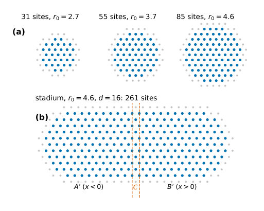
<figcaption class="paper-figure-caption"><b>Fig 1.</b> FIG. 1. Flake geometries. (a) Discs of 31, 55, and 85 sites used for a single skyrmion. (b) Stadium of half-width r0 = 4.6 and length d = 16 (261 sites) used for the free pair. Gray dots mark the first shell of the frozen ferromagnetic background. The dashed lines delimit the central column C (x = 0); the regions A′ (x &lt; 0) and B′ (x &gt; 0) are used for the number dis- tribution P(nA) and the mutual information (Appendix B).</figcaption>
</figure>
<figure class="paper-figure-card">
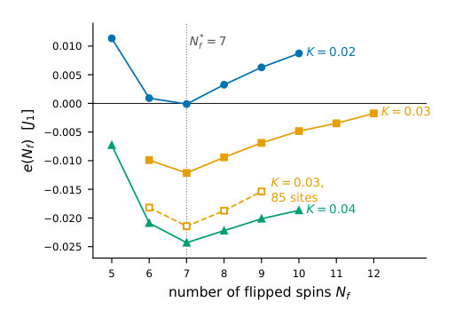
<figcaption class="paper-figure-caption"><b>Fig 2.</b> FIG. 2. Binding energy per flipped spin, e(Nf), of a single quantum skyrmion (DMRG, χ = 1000–1200) on the 55-site disc for K = 0.02, 0.03, and 0.04 (filled symbols), and on the 85-site disc for K = 0.03 (open symbols). The minimum at N ∗ f = 7 (dotted line) defines the natural size; its position is independent of K and of the flake, while its depth is not.</figcaption>
</figure>
<figure class="paper-figure-card">

<figcaption class="paper-figure-caption"><b>Fig 3.</b> FIG. 3. Distribution P(nA) of the number of flipped spins in the left half of a stadium. (a) K = 0.20, Nf = 3+3 skyrmions placed at d = 2, 3, and 4 with weak wells (hw = 0.02): P(nA) is broad and has no peak at nA = 3; strong wells (hw = 0.4, dashed line) make it bimodal. The two skyrmions have coalesced. (b) K = 0.03, Nf = 7+7, free pair (hw = 0) on the 217- and 261-site stadiums: a sharp peak at nA = 7 identifies two skyrmions.</figcaption>
</figure>
<figure class="paper-figure-card">
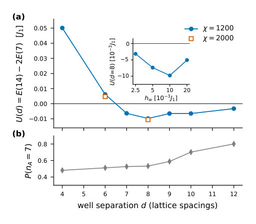
<figcaption class="paper-figure-caption"><b>Fig 4.</b> FIG. 4. Pinned pair at K = 0.03 (hw = 0.01, r0 = 3.7 stadiums). (a) Interaction energy U(d) = E(14) −2E(7) as a function of the well separation d; open squares, χ = 2000. Inset: U at d = 8 as a function of the pinning strength hw. (b) Weight P(nA = 7) of the 7+7 configuration, showing that the pair remains two objects at all d.</figcaption>
</figure>
<figure class="paper-figure-card">

<figcaption class="paper-figure-caption"><b>Fig 5.</b> FIG. 5. Free pair (hw = 0, K = 0.03). (a) Local density of flipped spins, ⟨Sz i ⟩+ 1/2, in the Nf = 14 ground state of the 261-site stadium. (b) Column profile n(x) of the same state and of the single-skyrmion reference (Nf = 7) in the same stadium; the two lobes of the pair are 5.5 lattice spacings apart. (c) Three DMRG starts on the 217-site stadium end at different separations with monotonically increasing energy (in units of J1, relative to Efm); the lowest, at separation 5.5, is the ground state.</figcaption>
</figure>
</div>

<p><strong>Summary.</strong> This work theoretically models the interaction between two quantum skyrmions in a frustrated magnet, finding that they form a weakly bound molecule. The binding is robustly characterized by excess number fluctuations and specific in-plane spin correlations, confirming a coherent magnon exchange mechanism. This suggests the molecule could function as a novel two-qubit element for quantum computation.</p>
<p><strong>Why it may be interesting.</strong> The concept of a quantum skyrmion molecule and its use as a potential two-qubit element directly connects condensed matter magnetism with quantum information science, making it highly relevant for AMO/quantum optics researchers.</p>
<details>
<summary>Detailed structure</summary>
<p><strong>Main problem.</strong> The study investigates the binding energy and coherent coupling mechanism between two quantum skyrmions in a frustrated spin-1/2 magnet.</p>
<p><strong>Main result.</strong> Two skyrmions of natural size form a weakly bound molecule with a binding energy of $U \simeq -0.007J_1$, mediated by a coherent exchange of magnons that locks their relative helicity.</p>
<p><strong>Method.</strong> The authors employed Density-Matrix Renormalization Group (DMRG) calculations and analyzed number fluctuations and in-plane spin correlations to characterize the binding.</p>
<p><strong>Model / system.</strong> The system is a spin-1/2 model on a triangular lattice with nearest-neighbor ($J_1$) and next-nearest-neighbor ($J_2$) interactions, subject to easy-axis anisotropy ($K$). Skyrmions are bound states of flipped spins ($N_f$).</p>
<p><strong>Key observables.</strong> Binding energy ($U$), number fluctuations ($    ext{var}(n_A)$), and in-plane spin correlations ($\langle \mathbf{S}<em -j>{+i} \mathbf{S}</em> 
angle$).</p>
<p><strong>Important parameters / regimes.</strong> Natural skyrmion size ($N_f^*=7$), binding energy $U \simeq -0.007J_1$, and anisotropy $K \in [0.02, 0.04]$.</p>
<p><strong>Assumptions / limitations.</strong> The analysis uses finite flakes embedded in a ferromagnetic background, and the free-pair binding energy is treated as an upper bound due to DMRG convergence limitations.</p>
<p><strong>Figures summary.</strong> Figures illustrate the minimum binding energy for single skyrmions at $N_f^*=7$, compare probability distributions for bound vs. independent pairs, and show non-zero in-plane correlations across the gap.</p>
<p><strong>Paper structure.</strong> The paper first establishes the single skyrmion size using binding energy analysis, then calculates the interaction energy for free pairs, and finally uses fluctuation and correlation measurements to confirm the coherent magnon exchange responsible for the molecular binding.</p>
</details>
<details>
<summary>Abstract</summary>
<p>Quantum skyrmions in frustrated spin-$1/2$ magnets are bound states of a few flipped spins in a ferromagnetic background. Using exact diagonalization and density-matrix renormalization group calculations for the $J_1$--$J_2$ triangular-lattice model with easy-axis anisotropy $K$, we ask what happens when two such objects are brought together. The binding energy per flipped spin of a single skyrmion has a minimum at $\Nf^{*}=7$ for $K=0.02$--$0.04$, and skyrmions smaller than $\Nf^{*}$ do not exist as pairs: at any distance they coalesce into a single larger object, and pinning wells cannot prevent it. Two skyrmions of natural size, by contrast, form a bound molecule without pinning or external field, with binding energy $U\simeq-0.007J_1$ at $K=0.03$--$0.04$ and an equilibrium separation of $5.5$ lattice spacings that does not depend on $K$ or on the size of the simulation domain; at $K=0.02$, where the single skyrmion is itself marginally bound, the pair is unbound within our resolution. The two constituents keep their identity ($7+7$ flipped spins) and are coupled by a coherent exchange of magnons, visible as number fluctuations between the two halves of the domain in excess of those of two independent skyrmions and as in-plane spin correlations between the two skyrmion walls that reach $0.16$ across the gap. These correlations follow the vortex pattern of the two textures and lock their relative helicity, the quantum counterpart of the helicity-dependent interaction of classical skyrmions. We discuss the molecule as a self-assembled two-qubit element for skyrmion helicity qubits in a single layer.</p>
</details>
<p><sub><a href="#top">↑ back to top</a></sub></p>

<p><a id="paper-2610.17367"></a></p>
<h3 id="periodic-pulse-control-of-collective-emission-and-photon-statistics-in-interacting-quantum-emitters"><a href="http://arxiv.org/abs/2610.17367v1">Periodic-Pulse Control of Collective Emission and Photon Statistics in Interacting Quantum Emitters</a></h3>
<p><strong>Authors:</strong> Kavalambramalil George Paulson, Fu Li, Hanna Terletska<br>
<strong>Type:</strong> theory · <strong>Category:</strong> other · <strong>PDF:</strong> <a href="https://arxiv.org/pdf/2610.17367v1">https://arxiv.org/pdf/2610.17367v1</a><br>
<strong>Analysis basis:</strong> full PDF text, analyzed in chunks
<strong>Topic relevance:</strong> <code>Tavis-Cummings &amp; cavity-many-emitter</code> <strong>3/5</strong> · <code>correlated / nonlocal dissipation</code> <strong>3/5</strong> · <code>interference shaping light</code> <strong>3/5</strong> · <code>Dicke superradiance</code> <strong>2/5</strong> · <code>driven-dissipative phase transition</code> <strong>2/5</strong> · <code>methods for driven-dissipative</code> <strong>2/5</strong> · <code>Full counting statistics</code> <strong>1/5</strong> · <code>non-equilibrium universality</code> <strong>1/5</strong> · <code>quantum measurements</code> <strong>1/5</strong> · <code>superradiant laser</code> <strong>1/5</strong></p>
<div class="figure-strip-hint">↔ Scroll figures horizontally</div>
<div class="paper-figures-scroll">
<figure class="paper-figure-card">

<figcaption class="paper-figure-caption"><b>Fig 1.</b> FIG. 1. Energy level diagrams of an identical two-emitter system in the bare, collective, and dressed bases are shown in Figs(a), (b), and (c), respectively.</figcaption>
</figure>
<figure class="paper-figure-card">
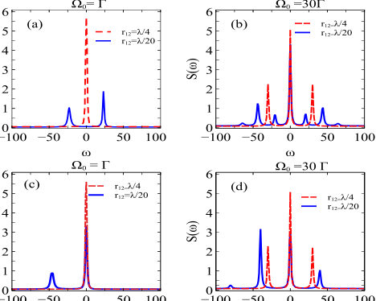
<figcaption class="paper-figure-caption"><b>Fig 2.</b> FIG. 2. Collective emission spectrum from a coupled two identical (∆1 = ∆2) emitter system under continuous driv- ing fields for ˆµ ⊥ˆr12. In (a) and (b), the laser is tuned to two-photon resonance (2ω0 = 2ωL) with Rabi frequencies Γ and 30Γ, respectively. The laser is tuned to the transition frequency of the superradiant state (∆= −Ω12) in (c) and (d), with the Rabi frequency set to Γ and 30Γ, respectively. The cases of weak and strong dipole–dipole coupling are con- sidered, corresponding to r12 = λ/4 and r12 = λ/20, where r12 and λ denote the interatomic distance and the resonant wavelength, respectively. The total time of evolution is con- sidered to be Γt = 4.</figcaption>
</figure>
<figure class="paper-figure-card">
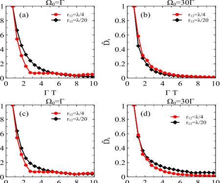
<figcaption class="paper-figure-caption"><b>Fig 3.</b> FIG. 3. Normalized spectral distance ˜DS, tracking the rela- tive change between spectra at successive times, for a con- tinuously driven system of two identical coupled emitters (∆1 = ∆2) with ˆµ ⊥ˆr12. Panels (a) and (b) correspond to two-photon resonance (2ωL = 2ω0) at Rabi frequencies Γ and 30Γ, respectively, while panels (c) and (d) correspond to driving at the superradiant transition frequency (∆= −Ω12), at Rabi frequencies Γ and 30Γ, respectively. In each case, re- sults are shown for weak (r12 = λ/4) and strong (r12 = λ/20) dipole-dipole coupling, where r12 is the interatomic separa- tion and λ is the resonant wavelength.</figcaption>
</figure>
<figure class="paper-figure-card">

<figcaption class="paper-figure-caption"><b>Fig 4.</b> FIG. 4. Collective emission spectrum from a coupled two identical (∆1 = ∆2) emitter system under global σx rota- tion for ˆµ ⊥ˆr12. In (a) and (b), the laser is tuned to two- photon resonance (2ω0 = 2ωL), and in (c) and (d), the laser is tuned to the transition frequency of the superradiant state (∆= −Ω12). The rotation around the x axis is performed at inter pulse intervals τ = 0.1, 0.5 and 2.0 for dipole-dipole cou- pling strengths corresponding to r12 = λ/4 and r12 = λ/20, respectively. r12 and λ denote the interatomic distance and the resonant wavelength, respectively. The total time of evo- lution is considered to be Γt = 4.</figcaption>
</figure>
<figure class="paper-figure-card">
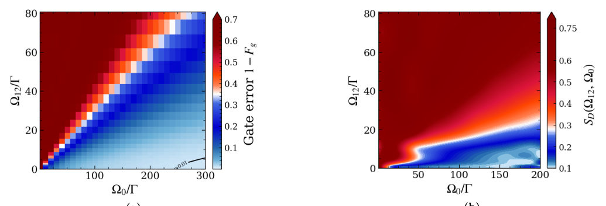
<figcaption class="paper-figure-caption"><b>Fig 5.</b> FIG. 5. (a) Gate error, 1−Fg, for a finite-duration π pulse as a function of the pulse Rabi frequency Ω0/Γ and the dipole-dipole coupling strength Ω12/Γ. The gate error decreases as Ω0 increases, indicating that sufficiently strong finite-duration pulses closely approximate the ideal instantaneous σx rotation, even in the presence of inter-emitter coupling. (b) Spectral distance, SD, between the spectra generated by finite-duration and instantaneous pulse sequences, evaluated for Np = 10 pulses. Smaller values of SD indicate better agreement with the instantaneous-pulse limit.</figcaption>
</figure>
</div>

<p><strong>Summary.</strong> This paper explores controlling the light emitted by two coupled quantum emitters using periodic laser pulses. The authors show that pulsing allows for independent tailoring of the emission spectrum and the photon correlation statistics. This provides a powerful, versatile tool for designing quantum light sources beyond what is achievable with continuous driving.</p>
<p><strong>Why it may be interesting.</strong> This work directly addresses quantum control in open quantum systems, demonstrating how time-domain engineering (pulsing) can decouple spectral features from photon statistics, which is a key concept in quantum light sources.</p>
<details>
<summary>Detailed structure</summary>
<p><strong>Main problem.</strong> The paper investigates how periodic pulsed driving can control the collective emission spectra and photon statistics of two interacting quantum emitters, comparing these results to continuous-wave (CW) excitation.</p>
<p><strong>Main result.</strong> Periodic pulsed driving offers a versatile control mechanism, allowing the emission spectra to mimic CW results while making the photon correlations insensitive to resonance conditions in the short-pulse limit.</p>
<p><strong>Method.</strong> The analysis uses the master equation formalism to model the system's evolution under both CW and pulsed driving, employing the instantaneous-pulse approximation for pulsed regimes.</p>
<p><strong>Model / system.</strong> The system consists of two identical, dipole-dipole-coupled two-level emitters. The dynamics are governed by a Hamiltonian and a master equation incorporating coherent evolution and dissipation rates.</p>
<p><strong>Key observables.</strong> Collective emission spectra and second-order photon correlation functions, g^(2)(t,τ).</p>
<p><strong>Important parameters / regimes.</strong> Inter-pulse delay (τ_D), detuning (Δ), and the strength of the dipole-dipole coupling (Ω_12).</p>
<p><strong>Assumptions / limitations.</strong> The analysis relies on the Born-Markov approximation and, for pulsed driving, assumes the instantaneous-pulse limit.</p>
<p><strong>Figures summary.</strong> Figures illustrate the comparison of g^(2)(t,τ) under CW versus pulsed driving, showing how the inter-pulse delay controls the statistics, while the spectrum reflects coupling and delay.</p>
<p><strong>Paper structure.</strong> The paper first establishes the model for two coupled emitters, then analyzes the dynamics under CW driving, and finally focuses on the unique control offered by periodic pulsed driving to tailor both spectral and statistical properties.</p>
</details>
<details>
<summary>Abstract</summary>
<p>We investigate the collective emission spectra and photon correlations of two identical dipole-dipole-coupled emitters under continuous-wave (CW) and periodic pulsed driving. Our results show that a periodic train of instantaneous $π_x$ pulses can generate emission spectra whose dominant features closely resemble those obtained under CW excitation. We find that the structure of the collective emission spectra reflects the interplay among the resonance conditions, dipole-dipole coupling, and the inter-pulse delay $τ_D$. We further demonstrate that finite-duration $π_x$ pulses with sufficiently high Rabi frequencies can closely reproduce the ideal instantaneous-pulse limit. In contrast to the emission spectra, the photon correlations $g^{(2)}(t,τ)$ are governed primarily by $τ_D$ and, unlike under CW driving, become increasingly insensitive to the resonance conditions in the short-pulse limit. These results establish periodic pulsed driving as a versatile means of tailoring both the emission spectra and the photon statistics of coupled two-emitter systems.</p>
</details>
<p><sub><a href="#top">↑ back to top</a></sub></p>

<p><a id="paper-2610.18362"></a></p>
<h3 id="v-type-atomic-variance-squeezing"><a href="http://arxiv.org/abs/2610.18362v1">V-type Atomic Variance Squeezing</a></h3>
<p><strong>Authors:</strong> Chenrui Bi, Hong-Mei Zou, Zhao-Yang Tong, Zijin Liang<br>
<strong>Type:</strong> theory · <strong>Category:</strong> other · <strong>PDF:</strong> <a href="https://arxiv.org/pdf/2610.18362v1">https://arxiv.org/pdf/2610.18362v1</a><br>
<strong>Analysis basis:</strong> full PDF text, analyzed in chunks
<strong>Topic relevance:</strong> <code>Tavis-Cummings &amp; cavity-many-emitter</code> <strong>3/5</strong> · <code>correlated / nonlocal dissipation</code> <strong>3/5</strong> · <code>driven-dissipative phase transition</code> <strong>3/5</strong> · <code>methods for driven-dissipative</code> <strong>3/5</strong> · <code>analog quantum simulation</code> <strong>2/5</strong> · <code>non-equilibrium universality</code> <strong>2/5</strong> · <code>quantum measurements</code> <strong>2/5</strong> · <code>Keldysh / 2PI / non-Gaussian methods</code> <strong>1/5</strong></p>
<div class="figure-strip-hint">↔ Scroll figures horizontally</div>
<div class="paper-figures-scroll">
<figure class="paper-figure-card">

<figcaption class="paper-figure-caption"><b>Fig 1.</b> FIG. 1: The influence of atomic initial state parameter α on variance squeezing factors V (Sx) and V (Sy) for the V-type atom. (a) V (Sx) as function of the dimensionless scaled time κt and α. (b) V (Sy) as function of κt and α. (c) V (Sx) (red solid line) and V (Sy) (blue dashed line) as functions of α at t = 0. (d) ∆Sx (red solid line), ∆Sy (blue dashed line) and p</figcaption>
</figure>
<figure class="paper-figure-card">

<figcaption class="paper-figure-caption"><b>Fig 2.</b> FIG. 2: The influence of atomic initial state parameter β on variance squeezing factors V (Sx) and V (Sy) for the V-type atom. (a) V (Sx) as function of the dimensionless scaled time κt and β. (b) V (Sy) as function of κt and β. (c) V (Sx) (red solid line) and V (Sy) (blue dashed line) as functions of α at t = 0. (d) ∆Sx (red solid line), ∆Sy (blue dashed line) and p</figcaption>
</figure>
<figure class="paper-figure-card">
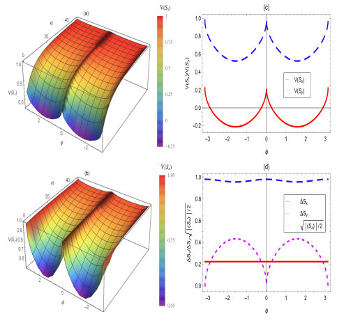
<figcaption class="paper-figure-caption"><b>Fig 3.</b> FIG. 3: The influence of atomic initial state parameter ϕ on variance squeezing factors V (Sx) and V (Sy) for the V-type atom. (a) V (Sx) as function of the dimensionless scaled time κt and ϕ. (b) V (Sy) as function of κt and ϕ. (c) V (Sx) (red solid line) and V (Sy) (blue dashed line) as functions of α at t = 0. (d) ∆Sx (red solid line), ∆Sy (blue dashed line) and p</figcaption>
</figure>
<figure class="paper-figure-card">

<figcaption class="paper-figure-caption"><b>Fig 4.</b> Fig. 2(d) displays the dependence of the Heisen- berg criteria ∆Sx, ∆Sy and p</figcaption>
</figure>
<figure class="paper-figure-card">

<figcaption class="paper-figure-caption"><b>Fig 5.</b> FIG. 4: Time evolution of variance squeezing factors V (Sx) and V (Sy), as well as the expectation value of Sz for the V- type atom. γ0 = 0.01 (red solid line); γ0 = 0.1 (blue dashed line); γ0 = 5 (purple dotted line). The remaining parameters are set as κ = 1, θ = 0, and ∆= 0. (a) Variance-squeezing factor V (Sx); (b) Variance-squeezing factor V (Sy); (c) Ex- pectation value ⟨Sz⟩.</figcaption>
</figure>
</div>

<p><strong>Summary.</strong> This theoretical study analyzes variance squeezing in a V-type atom coupled to a dissipative cavity. The authors find that while squeezing alternates between $S_x$ and $S_y$ based on initial conditions, the squeezing depth of $S_x$ is robustly protected by weak environmental coupling and detuning. These findings offer practical guidelines for enhancing quantum coherence in high-precision quantum communication devices.</p>
<p><strong>Why it may be interesting.</strong> This work directly addresses open quantum systems dynamics in cavity QED, providing quantitative insights into how environmental coupling and detuning can be engineered to protect fragile quantum correlations like variance squeezing, which is crucial for quantum communication.</p>
<details>
<summary>Detailed structure</summary>
<p><strong>Main problem.</strong> The paper investigates the phenomenon of variance squeezing in a V-type atom that interacts with a dissipative optical cavity.</p>
<p><strong>Main result.</strong> The optimal variance squeezing depth of $S_x$ is determined solely by the initial atomic state and is robustly enhanced by weak cavity-environment coupling and appropriate atom-cavity detuning.</p>
<p><strong>Method.</strong> The study uses theoretical derivations to calculate the reduced density matrix and subsequently compute expectation values and variance-squeezing factors for the atomic spin operators.</p>
<p><strong>Model / system.</strong> The system modeled is a V-type three-level atom coupled to a dissipative optical cavity, treated as an open quantum system subject to various decay channels.</p>
<p><strong>Key observables.</strong> Atomic spin operators ($S_x, S_y, S_z$), variance-squeezing factor ($V(S_x), V(S_y)$), and the expectation value $\langle S_z 
angle$.</p>
<p><strong>Important parameters / regimes.</strong> Initial state parameters ($\alpha$), cavity-environment coupling ($\kappa$), atom-cavity detuning ($\Delta$), and the SGI parameter ($    heta$).</p>
<p><strong>Assumptions / limitations.</strong> The analysis treats the system as an open quantum system, deriving the reduced density matrix by tracing out the environment degrees of freedom.</p>
<p><strong>Figures summary.</strong> Figures illustrate the time evolution of variance squeezing factors ($V(S_x)$ and $V(S_y)$) under varying initial parameters ($\alpha$), coupling ratios ($\gamma_0/\kappa$), and detuning ($\Delta$).</p>
<p><strong>Paper structure.</strong> The paper first defines variance squeezing, then derives the reduced density matrix and necessary expectation value formulas. It proceeds to numerically analyze the dynamics by investigating the influence of initial state parameters, system coupling strengths, and detuning.</p>
</details>
<details>
<summary>Abstract</summary>
<p>Variance squeezing of a V-type atom interacting with a dissipative cavity is investigated. First, the influence of atomic initial state parameters on the variance squeezing is explored. The results show that the atomic variance squeezing switches alternately between Sx and Sy as the initial state parameter alpha sweeps from -pi to pi. The two squeezing intervals are symmetric about alpha = pi/4, each with a width of pi/2. For alpha = pi/14, only the Sx component can generate variance squeezing and will eventually disappear with time evolution due to unavoidable environmental noise. Then, the influence of system parameters on the variance squeezing is also studied. It is found that, the optical variance squeezing depth of Sx is determined solely by the atomic initial parameters and is independent of the system parameters. Both weak cavity-environment coupling and atom-cavity detuning can significantly enhance the robustness of the Sx variance squeezing. The SGI parameter has an extremely weak influence on variance squeezing. These results are beneficial for high-precision quantum communication applications.</p>
</details>
<p><sub><a href="#top">↑ back to top</a></sub></p>

<p><a id="paper-2610.17773"></a></p>
<h3 id="boson-sampling-using-fock-states-from-on-demand-single-photon-source-arrays-quantum-complexity-impact-of-dephasing"><a href="http://arxiv.org/abs/2610.17773v1">Boson Sampling Using Fock States from On-Demand Single Photon Source Arrays: Quantum Complexity &amp; Impact of Dephasing</a></h3>
<p><strong>Authors:</strong> Swarnabha Chattaraj, Anupam Madhukar<br>
<strong>Type:</strong> theory · <strong>Category:</strong> quantum information and computing · <strong>PDF:</strong> <a href="https://arxiv.org/pdf/2610.17773v1">https://arxiv.org/pdf/2610.17773v1</a><br>
<strong>Analysis basis:</strong> full PDF text, analyzed in chunks
<strong>Topic relevance:</strong> <code>analog quantum simulation</code> <strong>3/5</strong> · <code>correlated / nonlocal dissipation</code> <strong>3/5</strong> · <code>interference shaping light</code> <strong>3/5</strong> · <code>Full counting statistics</code> <strong>2/5</strong> · <code>driven-dissipative phase transition</code> <strong>2/5</strong> · <code>methods for driven-dissipative</code> <strong>2/5</strong> · <code>Keldysh / 2PI / non-Gaussian methods</code> <strong>1/5</strong> · <code>non-equilibrium universality</code> <strong>1/5</strong> · <code>quantum measurements</code> <strong>1/5</strong></p>
<div class="figure-strip-hint">↔ Scroll figures horizontally</div>
<div class="paper-figures-scroll">
<figure class="paper-figure-card">
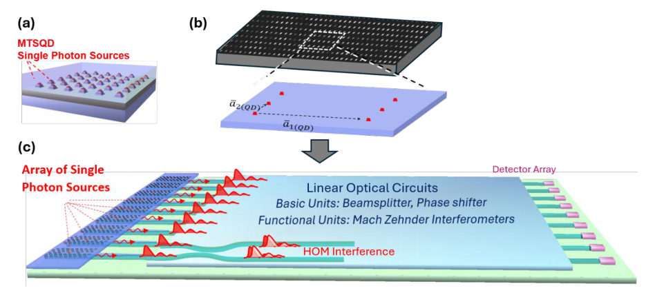
<figcaption class="paper-figure-caption"><b>Fig 1.</b> Figure 1. MTSQD array [red dots in panel (a) schematic &amp; panel (b) white dots a large area photoluminescence image] as the enabler [panel (c) schematic] for standard Fock state-based Boson sampling in large arrays that offer better computational complexity than the Gaussian Boson sampling.</figcaption>
</figure>
<figure class="paper-figure-card">
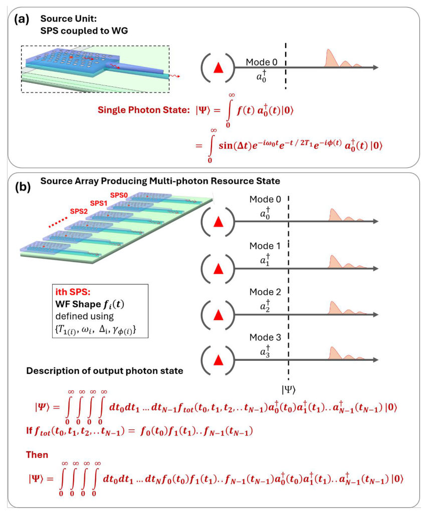
<figcaption class="paper-figure-caption"><b>Fig 2.</b> Figure 2. Description of single and multi-photon resource state (a) Single Photon wave packet produced from a single MTSQD SPS coupled to photonic cavity and waveguide. The wave packet can be characterized by 𝑇1 (radiative decay lifetime), Δ (fine structure splitting, and 𝜔 (energy). (b) Description of a N-photon resource state that can be produced by an ordered array of SPSs (such as the MTSQDs) in the wave packet representation.</figcaption>
</figure>
<figure class="paper-figure-card">
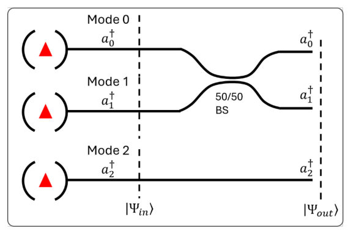
<figcaption class="paper-figure-caption"><b>Fig 3.</b> Figure 3. Example of multiphoton wave packet transformation by a simple linear optical circuit in a 3 waveguide, 3 photon configurations.</figcaption>
</figure>
<figure class="paper-figure-card">
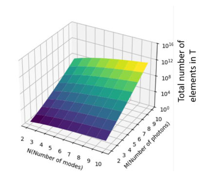
<figcaption class="paper-figure-caption"><b>Fig 4.</b> Figure 4. Total number of elements of the T matrix, (𝑀+ 𝑁−1</figcaption>
</figure>
<figure class="paper-figure-card">

<figcaption class="paper-figure-caption"><b>Fig 5.</b> Figure 5. (a) Device level schematic and (b) circuit-schematic of the 4-mode 4-photon QIP circuit and (c) the probability distribution of various Fock state configurations at the output. The red bars assume perfectly indistinguishable photons and the blue bars indicate distinguishable photons/ classical light.</figcaption>
</figure>
</div>

<p><strong>Summary.</strong> This work develops a theoretical framework to calculate the performance of Boson Sampling using single photons from on-demand sources, explicitly accounting for decoherence effects like dephasing. By modeling the evolution of multi-photon wave packets, the authors show how physical parameters dictate the achievable probability of generating highly entangled states, offering vital guidelines for experimental quantum optics.</p>
<p><strong>Why it may be interesting.</strong> It provides a crucial quantitative link between fundamental physical noise processes (like dephasing) occurring at the single-photon source level and the measurable quantum complexity of a photonic quantum computation.</p>
<details>
<summary>Detailed structure</summary>
<p><strong>Main problem.</strong> The paper analyzes how decoherence (dephasing and decay) affects the probability distribution of N-photon entangled states generated via Boson Sampling using on-demand single photon sources.</p>
<p><strong>Main result.</strong> The probability of generating entangled states, such as the 4-photon NOON state, depends quantitatively on the two-photon interference visibility, providing guidelines to link physical processes like temperature to quantum circuit output.</p>
<p><strong>Method.</strong> A theoretical framework is developed that links physical decoherence sources to multiphoton correlation measurements by explicitly incorporating state symmetrization and wave packet evolution.</p>
<p><strong>Model / system.</strong> The system models Boson Sampling using Fock states generated from arrays of on-demand single photon sources, specifically referencing Mesa Top Single Quantum Dots (MTSQDs). The theory tracks the evolution of the multi-photon wave packet through linear optical circuits.</p>
<p><strong>Key observables.</strong> Probability of generating N-photon entangled states (e.g., NOON state), 2-photon coincidence count histogram, and the two-photon interference visibility ($V_{TPI}$).</p>
<p><strong>Important parameters / regimes.</strong> Radiative decay lifetime ($T_1$), pure dephasing rate ($\gamma_{\phi}$), and the wave packet shape parameters.</p>
<p><strong>Assumptions / limitations.</strong> The analysis assumes a weak-coupling limit for photonic devices and models the state evolution by transferring the symmetrization burden to the time-domain wave packet function.</p>
<p><strong>Figures summary.</strong> Figures illustrate the MTSQD array enabling Fock state sampling, the single/multi-photon wave packet representations, and plots showing the dependence of $P_{NOON}$ and coincidence histograms on the dephasing rate ($T_2^*$).</p>
<p><strong>Paper structure.</strong> The paper builds from describing the physical platform (MTSQDs) to developing a mathematical framework for multi-photon wave packet evolution, applying this framework to calculate specific observables like the 4-photon NOON state probability, and finally analyzing the dependence on decoherence timescales.</p>
</details>
<details>
<summary>Abstract</summary>
<p>Boson sampling with array of on-demand single photons (discreet variable Fock states) as resource states provides distinct advantages in complexity scaling compared to single photon resource states mimicked by the states (continuous variable) generated in nonlinear photonics. Recent progress in realization of regular ordered array of mesa top single quantum dots (MTSQDs) enabling on-demand generation of many photon resource states with high single photon purity and indistinguishability [1,2] has opened the possibility of implementing chip-scale Boson sampling with single photons. An important question towards scale up of such circuits is how the dephasing and decay timescale of individual on-demand single photons affect the final probability distribution of the N-photon entangled state. In this work we report a framework that provides direct link between the physical sources of decoherence to the outcome of multiphoton correlation measurements. We explicitly incorporate the symmetrization of the N-photon states while accounting for the shape of the individual wave packets and dephasing. Using this framework, we show predictive estimates of the probability of generation of a 4-photon NOON state using an optical circuit initialized with 4 identical single photon wave packets, mimicking the emitted photons from MTSQD single photon sources reported in [2]. Specifically, we show how the probability of generating various 4-photon entangled states depend on the two-photon interference visibility which is determined by the pure dephasing timescale in relation to the radiative decay timescale. The results provide quantitative guidelines to measure 4 photon and higher number of entangled photon states generated in an optical circuit with on demand single photon sources and provide a link between physical processes such as temperature and the output state of the quantum optical circuits.</p>
</details>
<p><sub><a href="#top">↑ back to top</a></sub></p>

<p><a id="paper-2610.18661"></a></p>
<h3 id="dark-state-preparation-in-a-zero-field-split-molecular-triplet"><a href="http://arxiv.org/abs/2610.18661v1">Dark state preparation in a zero-field-split molecular triplet</a></h3>
<p><strong>Authors:</strong> Maria Pfahler, Andrea Donarini<br>
<strong>Type:</strong> both · <strong>Category:</strong> other · <strong>PDF:</strong> <a href="https://arxiv.org/pdf/2610.18661v1">https://arxiv.org/pdf/2610.18661v1</a><br>
<strong>Analysis basis:</strong> full PDF text, analyzed in chunks
<strong>Topic relevance:</strong> <code>driven-dissipative phase transition</code> <strong>3/5</strong> · <code>methods for driven-dissipative</code> <strong>3/5</strong> · <code>Keldysh / 2PI / non-Gaussian methods</code> <strong>2/5</strong> · <code>analog quantum simulation</code> <strong>2/5</strong> · <code>non-equilibrium universality</code> <strong>2/5</strong> · <code>quantum measurements</code> <strong>2/5</strong> · <code>QC/QI experiment</code> <strong>1/5</strong> · <code>correlated / nonlocal dissipation</code> <strong>1/5</strong> · <code>quantum optics experiment</code> <strong>1/5</strong></p>
<div class="figure-strip-hint">↔ Scroll figures horizontally</div>
<div class="paper-figures-scroll">
<figure class="paper-figure-card">

<figcaption class="paper-figure-caption"><b>Fig 1.</b> FIG. 1: Dark state in single molecule ESR-AFM. (a) Pentacene is placed on a thick insulating substrate in a specific angle Θ with respect to the current direction in the underlying microstrip. The resulting magnetic field couples to the molecular spin. Additionally, a gate voltage is applied to tune the molecular charge. (b) Schematic visualization of the dark state in the ZFS triplet with driving and decay to singlet: Anisotropic frontier orbitals of pentacene populated by unpaired spins coupled by dipole-dipole interaction give rise to the zero-field splitting of the triplet.</figcaption>
</figure>
<figure class="paper-figure-card">

<figcaption class="paper-figure-caption"><b>Fig 2.</b> FIG. 2: Trajectory in lab frame of the expectation values of the spin components for the initial pure state associated to |ψ⟩= 1 √</figcaption>
</figure>
<figure class="paper-figure-card">

<figcaption class="paper-figure-caption"><b>Fig 3.</b> FIG. 3: Near-resonant driving of dark and incoherent initial states. Tz-population Pz obtained for applying a rf drive with different detunings ∆, equal amplitudes (Axz = Ayz) and phase shifts ϕxz = ϕyz = 0 in (a) for the corresponding DS, and in (b) for the fully incoherent superposition 1</figcaption>
</figure>
<figure class="paper-figure-card">
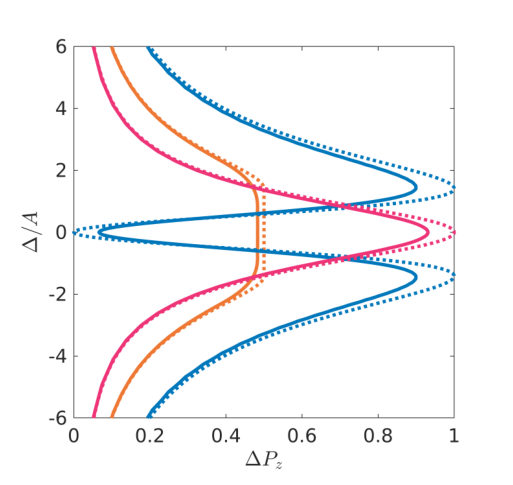
<figcaption class="paper-figure-caption"><b>Fig 4.</b> FIG. 4: Amplitude of the first Pz oscillation for the DS (blue), the fully incoherent superposition of |Tx⟩and |Ty⟩(orange) and the bright state (magenta). The full lines result from the numerical simulations including dissipation. The dashed lines represent the analytical results in Eqs. (22) to (24).</figcaption>
</figure>
<figure class="paper-figure-card">
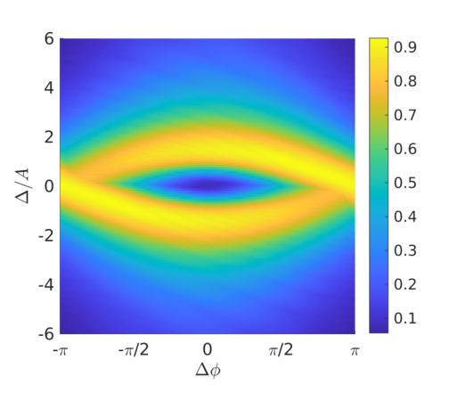
<figcaption class="paper-figure-caption"><b>Fig 5.</b> FIG. 5: ∆Pz as a function of the phase difference ∆ϕ = ϕyz −ϕxz and the frequency detuning ∆of the rf driving. The initial state is the DS in Eq. (20) always prepared with ∆ϕDS = 0 and equal amplitudes R = 1.</figcaption>
</figure>
</div>

<p><strong>Summary.</strong> This paper details a method to prepare and measure dark states in a single-molecule triplet using electron spin resonance coupled to an AFM tip. By modeling the system as a driven open quantum system, the authors theoretically predict and simulate the unique, time-invariant signature of the dark state. This work bridges fundamental quantum control concepts from atomic physics into the realm of molecular electronics.</p>
<p><strong>Why it may be interesting.</strong> This work directly applies concepts from quantum optics (dark states, coherent driving) to a solid-state, molecular platform (ESR-AFM), providing a novel, all-electrical realization of quantum coherence control.</p>
<details>
<summary>Detailed structure</summary>
<p><strong>Main problem.</strong> The paper proposes a protocol to prepare and probe dark states in a single-molecule electron spin resonance setup, extending techniques used for Rabi oscillations.</p>
<p><strong>Main result.</strong> A dark state, which is a coherent superposition of two ZFS states, was characterized as a state that does not evolve in time despite continuous resonant driving. This was demonstrated by comparing its signature to that of an incoherent superposition.</p>
<p><strong>Method.</strong> The study uses a combination of theoretical simulation (density-matrix formalism, Lindblad equation) and analogy to atomic physics to model the coherent manipulation of the system.</p>
<p><strong>Model / system.</strong> The system is a neutral molecule with a zero-field-split (ZFS) first excited triplet, studied using single-molecule electron spin resonance via an AFM tip. The dynamics are modeled as a driven open quantum system.</p>
<p><strong>Key observables.</strong> The total triplet population ($P_z(t)$) and the oscillation amplitudes ($\Delta P_x, \Delta P_y, \Delta P_z$) are key diagnostics for identifying the dark state signature.</p>
<p><strong>Important parameters / regimes.</strong> The ZFS parameters ($D, E$), the magnetic field components ($\mathbf{B}(t)$), and the detuning ($\Delta$) are crucial parameters.</p>
<p><strong>Assumptions / limitations.</strong> The analysis relies on treating the system as a driven open quantum system, employing the Lindblad master equation, and utilizing the Rotating Wave Approximation (RWA) for simplification.</p>
<p><strong>Figures summary.</strong> Figures illustrate the time evolution of ZFS state populations, showing the expected minimum signal for the dark state signature, which is robust against detuning.</p>
<p><strong>Paper structure.</strong> The paper first introduces the physical setup and Hamiltonian, then develops the theoretical framework using the density matrix and Lindblad equation, derives the dark state condition, and finally simulates the expected signatures using realistic parameters.</p>
</details>
<details>
<summary>Abstract</summary>
<p>We propose a protocol to prepare and probe dark states in a single-molecule electron spin resonance based on atomic force microscopy (ESR-AFM), thus extending existing techniques developed to address Rabi oscillations. To this end, we simulate in analogy to atomic physics the coherent manipulation of a three-level system in the V-configuration using a multifrequency magnetic field. More specifically, we consider a neutral molecule with a zero-field-split (ZFS) first excited triplet and analyze within a pump-probe scheme the dynamics of the total triplet population. In the triplet subspace, the dark state is a coherent superposition formed by two ZFS states which does not evolve in time despite a continuous resonant driving towards the third one. We characterize the properties of this state comparing it to its fully incoherent counterpart. Within a density-matrix formalism for open systems, we then compute the expected dark state signatures both for ideal scenarios and for the realistic parameterization of ESR-AFM on pentacene.</p>
</details>
<p><sub><a href="#top">↑ back to top</a></sub></p>

<p><a id="paper-2610.18237"></a></p>
<h3 id="towards-an-autonomous-optomechanical-maxwell-demon-engine"><a href="http://arxiv.org/abs/2610.18237v1">Towards an autonomous optomechanical Maxwell Demon engine</a></h3>
<p><strong>Authors:</strong> Sander Stammbach, Giulio Gasbarri, Stefan Nimmrichter<br>
<strong>Type:</strong> theory · <strong>Category:</strong> statistical mechanics · <strong>PDF:</strong> <a href="https://arxiv.org/pdf/2610.18237v1">https://arxiv.org/pdf/2610.18237v1</a><br>
<strong>Analysis basis:</strong> full PDF text, analyzed in chunks
<strong>Topic relevance:</strong> <code>driven-dissipative phase transition</code> <strong>3/5</strong> · <code>methods for driven-dissipative</code> <strong>3/5</strong> · <code>non-equilibrium universality</code> <strong>3/5</strong> · <code>quantum measurements</code> <strong>3/5</strong> · <code>Keldysh / 2PI / non-Gaussian methods</code> <strong>2/5</strong> · <code>correlated / nonlocal dissipation</code> <strong>1/5</strong> · <code>scars &amp; prethermalization</code> <strong>1/5</strong></p>
<div class="figure-strip-hint">↔ Scroll figures horizontally</div>
<div class="paper-figures-scroll">
<figure class="paper-figure-card">
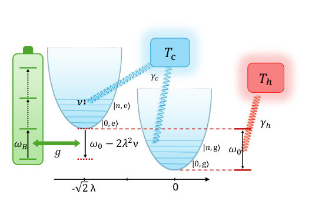
<figcaption class="paper-figure-caption"><b>Fig 1.</b> FIG. 1. Schematic representation of the autonomous demon engine. A qubit (red) with bare transition frequency ω0 is coupled to a harmonic-oscillator pointer (blue) of frequency ν. The qubit is coupled to a hot bath at temperature Th with rate parameter γh. Depending on the qubit state, the pointer potential is centered at xg = 0 or xe = − √</figcaption>
</figure>
<figure class="paper-figure-card">
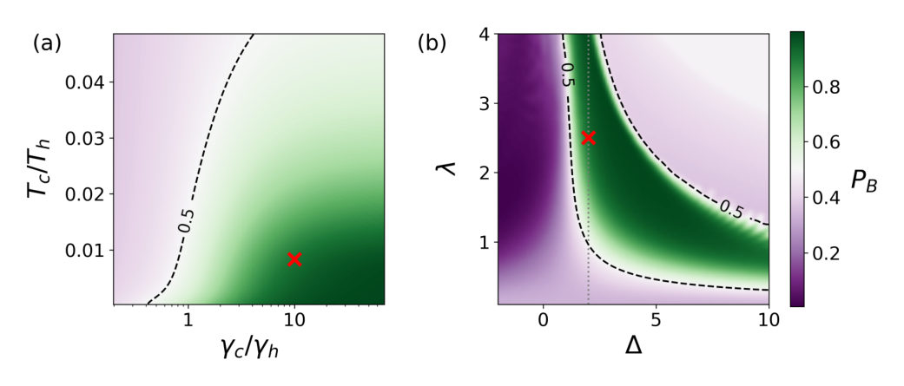
<figcaption class="paper-figure-caption"><b>Fig 2.</b> FIG. 2. Steady-state excitation probability PB of a two-level battery, calculated using the global Born-Markov-Secular master equation. Population inversion PB &gt; 1/2 is indicated in green shades and delimited by the dashed line. In (a), we vary the cold-bath temperature Tc and the pointer damping rate γc for a fixed ∆= 2. In (b), we vary the detuning parameter ∆, defined through ωB = ω0 −∆λ2ν, and the qubit–pointer coupling strength λ. The vertical line marks the characteristic resonance ∆= 2. Unless varied explicitly, the parameters are ν = 0.01ω0, γh = 0.01ν, γc = 0.1ν, g = 0.3ν, Th = ω0/ ln 2, Tc = 1.2ν, and λ = 2.5. The red cross marks the common reference parameter set across the three...</figcaption>
</figure>
<figure class="paper-figure-card">

<figcaption class="paper-figure-caption"><b>Fig 3.</b> FIG. 3. Energy current and entropy production as a function of time. The system evolves according to the local master equation (4), and it is initialized in the ground state of the full Hamiltonian. The model parameters correspond to the red cross in Fig. 2. (a) Heat currents from the hot (red) and the cold (blue) bath, together with the average battery charging power (green). The dashed lines indicates the steady-state heat currents. (b) Entropy production rate (purple) and the corresponding hot- and cold-bath contribution (red and blue), entering Eq. (8).</figcaption>
</figure>
<figure class="paper-figure-card">

<figcaption class="paper-figure-caption"><b>Fig 4.</b> FIG. 5. Battery ergotropy as a function of time for multilevel batteries of various sizes n. The asymptotic steady-state val- ues are marked by the dashed lines. The model parameters are those of Fig. 4(a), and the combined system is initialized in the ground state of the full Hamiltonian.</figcaption>
</figure>
<figure class="paper-figure-card">
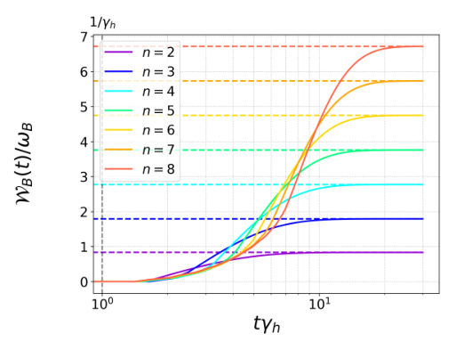
<figcaption class="paper-figure-caption"><b>Fig 5.</b> Figure 4 compares the steady-state charge for numer- ically accessible battery sizes from n = 2 to 9. We char- acterize the relative useful charge by the ergotropy nor- malized to the maximum battery energy, 0 ≤W/nωB ≤ 100%. Panel (a) corresponds to the reference parame- ter regime of Fig. 2, whereas in (b) we consider a five- fold larger cold-bath temperature, Tc = 6ν which results, as expected, in a lower relative charge of the battery. The semitransparent bars show the mean energy content of the battery normalized by the maximum energy nωB achievable by the battery. This quantity is barely above the ergotropy charge level in (a), but dominant in (b). At the lower cold-bath temperature,...</figcaption>
</figure>
</div>

<p><strong>Summary.</strong> This paper models an autonomous quantum engine based on a mechanical Maxwell Demon, where a qubit interacts with a pointer oscillator. The pointer's state-dependent coupling shifts the qubit's resonance, enabling controlled energy transfer from a hot bath into a quantum battery. The theoretical analysis confirms the feasibility of this process, providing guidelines for its implementation in physical platforms.</p>
<p><strong>Why it may be interesting.</strong> This work provides a detailed theoretical framework for non-equilibrium thermodynamics in quantum systems, specifically modeling how information acquisition (the 'demon' function) can drive work extraction from thermal gradients without external measurement.</p>
<details>
<summary>Detailed structure</summary>
<p><strong>Main problem.</strong> The paper develops a fully autonomous model of a mechanical Maxwell demon engine to convert heat absorbed by a qubit into usable energy (ergotropy) in an attached quantum battery.</p>
<p><strong>Main result.</strong> The mechanism successfully demonstrates selective energy transfer to the battery by utilizing the state-dependent resonance shift induced by the pointer, operating as a continuous thermal machine.</p>
<p><strong>Method.</strong> The dynamics are analyzed by deriving and comparing local and global Lindblad master equations, with theoretical derivations focusing on the polaron transformation and Franck-Condon factors.</p>
<p><strong>Model / system.</strong> The system consists of three coupled components: a qubit (working medium), a damped mechanical oscillator (pointer) governed by a Holstein-type Hamiltonian, and a quantum battery (spin system).</p>
<p><strong>Key observables.</strong> Steady-state population inversion of the battery (quantified by ergotropy), heat currents, and entropy production rate.</p>
<p><strong>Important parameters / regimes.</strong> The optimal operating regime requires red-detuning ($\omega_B < \omega_0$) and fast pointer relaxation ($\gamma_c > \gamma_h$).</p>
<p><strong>Assumptions / limitations.</strong> The analysis assumes the pointer relaxation is fast compared to qubit dynamics, and the local master equation description is valid in the operating regime.</p>
<p><strong>Figures summary.</strong> Figures schematically illustrate the coupling mechanisms and show the time evolution of battery and qubit populations derived from various master equation approximations (TCL2, BMS, local).</p>
<p><strong>Paper structure.</strong> The paper first introduces the coupled system and the autonomous mechanism. It then derives the necessary resonance condition using polaron transformations. The core analysis involves comparing different master equation formalisms (local vs. global) to predict the steady-state energy extraction. Finally, it discusses potential physical platforms for implementation.</p>
</details>
<details>
<summary>Abstract</summary>
<p>We present a fully autonomous model of a mechanical Maxwell demon engine that converts heat absorbed by a qubit into population inversion in an attached quantum battery. A damped mechanical oscillator acts as a pointer that incorporates the essential demon function of information acquisition about the qubit state and subsequent feedback into the system dynamics, replacing external measurements and control operations. This is achieved by means of a Holstein-type Hamiltonian, which makes the pointer's equilibrium position depend on the qubit state and thereby induces a state-dependent resonance shift. The mechanism enables a selective energy transfer to an attached spin system that acts as the quantum battery. We derive both local and global Lindblad master equations for the coupled system and identify the parameter regimes in which the engine operates efficiently. The figure of merit is the resulting steady-state population inversion of the battery, quantified in terms of ergotropy. Based on these results, we discuss the necessary conditions for practical implementations of the demon engine on realistic experimental platforms.</p>
</details>
<p><sub><a href="#top">↑ back to top</a></sub></p>
<hr>
<p>
<a href="index.html">← Index</a>
 · <a href="papers_02.html">Next →</a>
</p>
<hr>

</body>
</html>
